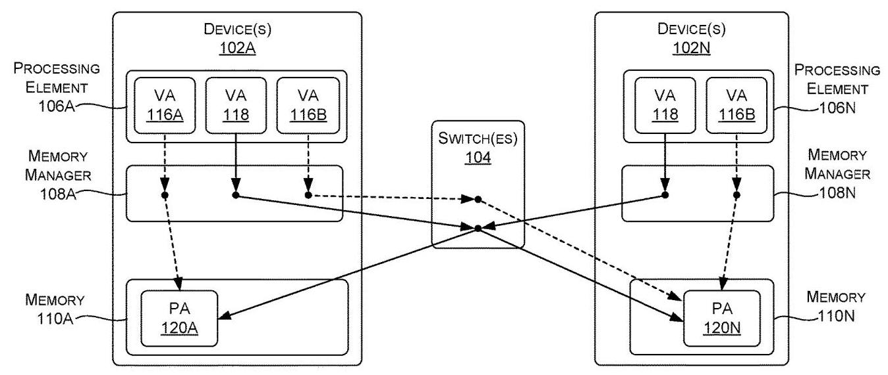
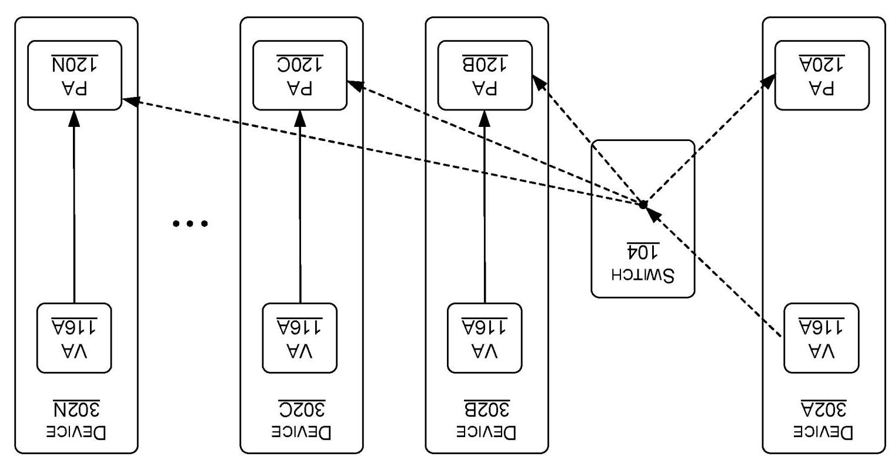
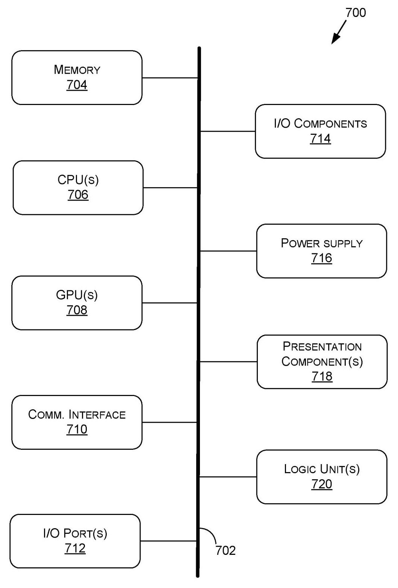

(19) United States
(19) 美国
(12) Patent Application Publication (10) Pub. No.: US 2023/0229599 A1 Dearth et al. (43) Pub. Date: Jul. 20, 2023
(54) MULTICAST AND REFLECTIVE MEMORY BEHAVIOR FOR MEMORY MODEL CONSISTENCY
(54) 用于内存模型一致性的多播与反射内存行为
(71) Applicant: NVIDIA Corporation, Santa Clara, CA (US)
(71) 申请人：NVIDIA Corporation，美国加利福尼亚州圣克拉拉 (US)
(72) Inventors: Glenn Alan Dearth, Groton, MA (US); Mark Hummel, Franklin, MA (US); Daniel Joseph Lustig, Somerville, MA (US)
(72) 发明人：格伦·艾伦·迪尔思，马萨诸塞州格罗顿（美国）；马克·赫梅尔，马萨诸塞州富兰克林（美国）；丹尼尔·约瑟夫·卢斯蒂格，马萨诸塞州萨默维尔（美国）
(21) Appl. No.: 17/578,266
(21) 申请号：17/578,266
(22) Filed: Jan. 18, 2022
(22) 申请日：2022年1月18日
Publication Classification
出版物分类
(51) Int. Cl.
(51) 国际专利分类
G06F 12/1045 (2006.01)
G06F 12/1045 (2006.01)
G06F 12/02 (2006.01)
G06F 12/02 (2006.01)
G06F 13/16 (2006.01)
G06F 13/16 (2006.01)
(52) U.S. Cl.
(52) 美国分类号
CPC ...... G06F 12/1063 (2013.01); G06F 12/1054 (2013.01); G06F 12/0238 (2013.01); G06F 13/1668 (2013.01)
CPC ...... G06F 12/1063 (2013.01); G06F 12/1054 (2013.01); G06F 12/0238 (2013.01); G06F 13/1668 (2013.01)
(57)ABSTRACT
In various examples, a memory model may support multicasting where a single request for a memory access operation may be propagated to multiple physical addresses associated with multiple processing elements (e.g., corresponding to respective local memory). Thus, the request may cause data to be read from and/or written to memory for each of the processing elements. In some examples, a memory model exposes multicasting to processes. This may include providing for separate multicast and unicast instructions or shared instructions with one or more parameters (e.g., indicating a virtual address) being used to indicate multicasting or unicasting. Additionally or alternatively, whether a request(s) is processed using multicasting or unicasting may be opaque to a process and/or application or may otherwise be determined by the system. One or more constraints may be imposed on processing requests using multicasting to maintain a coherent memory interface.
在各种示例中，一种存储器模型可以支持多播，其中单个存储器访问操作请求可以被传播到与多个处理元件相关联的多个物理地址（例如，对应于各自的本地存储器）。因此，该请求可以使得针对每个处理元件从存储器读取数据和/或向存储器写入数据。在一些示例中，存储器模型将多播暴露给进程。这可以包括提供单独的多播指令和单播指令，或者具有一个或多个参数（例如，指示虚拟地址）的共享指令用于指示多播或单播。附加地或替代地，请求（s）是使用多播还是单播进行处理，可能对进程和/或应用程序是透明的，或者可以由系统以其他方式确定。可以对使用多播处理请求施加一个或多个约束，以维护一致的存储器接口。


Figure 1
图 1
| Instruction | Type | Perform on Unicast | Perform on Multicast | |
| Store | 202 | Unicast | Store | Fault or Store @ target |
| Load | 204 | Unicast | Load | Fault or Load @ target |
| Atomic | 206 | Unicast | Atomic | Fault or Atomic @ target |
| Reduce | 208 | Unicast | Reduce | Fault or Reduce @ target |
| Reducing Load | 210 | Multicast | Fault | Reducing Load |
| Store-MC | 212 | Multicast | Fault | Store-MC |
| Reduce-MC | 214 | Multicast | Fault | Reduce-MC |
Figure 2
E FUNDI-
本专利申请提出一种内存模型，将传统的单播内存访问扩展至支持多播，使得单个内存访问请求能传播到分布于多个处理单元（例如GPU）中的多个物理地址。其主要目标是减少全归约等集合通信操作的延迟与带宽开销，这对深度学习至关重要。
关键的贡献在于一种机制，能将一个虚拟地址转换为多个物理地址，使一次加载或存储操作同时指向多个本地内存。系统可通过独立的虚拟地址空间或专用指令将多播暴露给软件，也可透明地应用多播，同时施加约束以维持内存一致性。这些约束包括：将写访问限制为单一生产者，强制某些请求经由外部交换机以串行化操作，以及利用反射路径避免竞态条件。该架构包含执行地址转换与请求传播的内存管理单元和交换机。此外，来自软件的提示或模式检测可触发值的复制，以加速未来的读取。主要发现是，多播可融入一致性内存模型，在保留原有编程模型的同时，显著提升并行、协调处理的性能。


Figure 4

FIGURE 5
600
本专利申请提出了一种内存模型，将传统的单播内存访问扩展为支持多播，使得一个内存访问请求能被传播到分布在多个处理单元（如GPU）上的多个物理地址。其主要目标是降低全规约（all‑reduce）等集体操作的时延和带宽开销，这类操作在深度学习中至关重要。
关键的创新在于一种将虚拟地址翻译为多个物理地址的机制，使得一次加载或存储可以同时针对多个本地内存。系统可以通过独立的虚拟地址空间或专门的指令将多播特性暴露给软件，也可以在不暴露的情况下透明地应用多播，同时强制执行约束以维持内存一致性。这些约束包括：将写访问限制为单个生产者，强制某些请求通过外部交换机以序列化操作，以及利用反射路径避免竞争条件。该架构包含内存管理单元和交换机，用于执行地址翻译和请求传播。此外，来自应用程序的提示或模式检测还可以触发对值的复制，以加速未来的读取。主要发现是，多播可以集成到一致性的内存模型中，在保持原有编程模型的同时，显著提升并行、协调处理的性能。
TRANSLATE A VIRTUAL ADDRESS TO A PLURALITY OF
将虚拟地址转换为多个
PHYSICAL ADDRESSES
物理地址
B602
本专利申请提出了一种内存模型，将传统的单播内存访问扩展为支持多播，使得单个内存访问请求能够传播到分布式处理单元（如GPU）中的多个物理地址。其主要目标是降低集体操作（如深度学习中关键的all‑reduce）的延迟和带宽开销。
关键贡献在于一种将虚拟地址转换为多个物理地址的机制，从而使一次加载或存储能够同时针对多个本地内存。系统可以通过独立的虚拟地址空间或专用指令将多播能力暴露给软件，也可以在透明应用多播的同时施加约束以维持内存一致性。这些约束包括限制写访问仅允许单一生产者、强制某些请求通过外部交换机以实现操作串行化，以及利用反射路径避免竞争条件。该架构涉及执行地址转换和请求传播的内存管理单元和交换机。此外，来自应用的提示或模式检测可以触发值的复制，以加速未来的读取。主要发现是，多播可以集成到一致的内存模型中，在保持编程模型的同时，显著提升并行协同处理的性能。
PERFORM MEMORY ACCESSES USING THE PLURALITY OF
使用多个……执行存储器访问
PHYSICAL ADDRESSES
物理地址
B604
本专利申请提出了一种内存模型，将传统的单播内存访问扩展为支持多播，使单次内存访问请求可以传播到分布于多个处理单元（例如 GPU）上的多个物理地址。其主要目标是降低全归约等集合操作在延迟和带宽上的开销，这类操作在深度学习中至关重要。
关键的贡献在于一种将虚拟地址转换为多个物理地址的机制，从而使一次加载或存储能够同时针对多个本地内存。系统可以通过独立的虚拟地址空间或专用指令向软件暴露多播功能，也能在透明应用多播的同时施加约束以保持内存一致性。这些约束包括：将写访问限制为单一生产者，强制某些请求通过外部交换机以序列化操作，以及使用反射路径来避免竞争条件。该架构涉及执行地址转换和请求传播的内存管理单元及交换机。此外，来自应用的提示或模式检测可以触发数值复制，以加速后续读取。主要发现是，多播可以集成到一致的内存模型中，既保留原有的编程模型，又能显著提升并行、协同处理场景下的性能。
FIGURE 6

Figure 7
图7

Figure 8
图8
MULTICAST AND REFLECTIVE MEMORY BEHAVIOR FOR MEMORY MODEL CONSISTENCY
BACKGROUND
[0001] Computing processes may leverage multiple processing elements, such as streaming multiprocessors (SMs) of graphics processing units (GPUs), to perform processing operations. To do so, the processing elements may provide requests for memory access, which may involve reading from and/or writing to memory using a memory model. The memory model may allow for the processing elements to coordinate on reading and writing data, which is crucial for supporting parallel or otherwise coordinated processing. For example, in systems where memory is distributed across multiple GPUs, each SM of a GPU may read from and/or write to either local memory of the GPU or remote memory of another GPU. To facilitate coordination between the SMs, the memory model may implement a virtual addressing scheme where virtual addresses (VAs) are mapped to physical addresses (PAs) across the GPUs. To maintain coherency, each VA may map to a particular PA such that any SM may use the VA to request a memory operation be performed using the particular PA.
[0001] 计算过程可利用多个处理元件（例如图形处理单元（GPU）的流式多处理器（SM））来执行处理操作。为此，这些处理元件会发出内存访问请求，这可能涉及使用某种内存模型对内存进行读取和/或写入。该内存模型允许处理元件在读写数据时进行协调，这对于支持并行或其他形式的协同处理至关重要。例如，在内存分布于多个 GPU 之间的系统中，每个 GPU 的 SM 既可以读取和/或写入 GPU 的本地内存，也可以操作其他 GPU 的远程内存。为便于 SM 之间的协调，内存模型可实现一种虚拟寻址方案，将虚拟地址（VA）映射到跨越各 GPU 的物理地址（PA）。为保持一致性，每个 VA 只能映射到特定的 PA，从而使任何 SM 都可以使用该 VA 请求在特定的 PA 上执行内存操作。
[0002] When processing elements are performing coordinated processing, some processing operations may involve receiving data from and/or providing data to multiple processing elements. For example, an all-reduce operation may involve collecting data from each processing element to perform reductions (e.g., a sum, a max, etc.) across devices and broadcasting the result to each processing element. Collecting the data may require a memory access request for each processing element and broadcasting the result may again require a memory access request for each processing element. As such, the required number of requests may increase with the number of participating processing elements, increasing latency and/or bandwidth requirements. This overhead may be especially impactful in deep learning, where all-reduce has become a key operation that is performed at a high frequency.
当处理单元进行协调处理时，某些处理操作可能涉及从多个处理单元接收数据和/或向多个处理单元提供数据。例如，全归约操作可能需要从每个处理单元收集数据以跨设备执行归约（例如求和、求最大值等），并将结果广播给每个处理单元。收集数据可能需要对每个处理单元发起一次内存访问请求，而广播结果可能又需要对每个处理单元再次发起一次内存访问请求。因此，所需的请求数量可能随参与处理单元的数量而增加，从而增加延迟和/或带宽需求。这种开销在深度学习中尤为显著，因为全归约已成为一项高频执行的关键操作。
SUMMARY
[0003] Embodiments of the present disclosure relate to multicast and reflective memory behavior for memory model consistency. Systems and methods are disclosed that provide for multicasting memory access requests from processing elements. Disclosed approaches may be compatible with unicast memory models while ensuring coherency amongst the processing elements.
[0003] 本公开实施例涉及用于内存模型一致性的多播和反射内存行为。公开的系统和方法用于从处理元件多播内存访问请求。所公开的方法可在确保处理元件之间一致性的同时，兼容单播内存模型。
[0004] In contrast to conventional approaches, such as those described above, a memory model may support multicasting where a single request for a memory access operation may be propagated to multiple physical addresses associated with multiple processing elements (e.g., corresponding to respective local memory). Thus, the request may cause data to be read from and/or written to memory for each of the processing elements. In some examples, a memory model exposes multicasting to processes. This may include providing for separate multicast and unicast instructions or shared instructions with one or more parameters (e.g., indicating a virtual address) being used to indicate multicasting or unicasting. Additionally or alternatively, whether a request(s) is processed using multicasting or unicasting may be opaque to a process and/or application or may otherwise be determined by the system. One or more constraints may be imposed on processing requests using multicasting to maintain a coherent memory interface.
[0004] 与上文所述的传统方法不同，一种内存模型可支持多播，即单个内存访问操作请求可被传播至与多个处理元件（例如，对应于各自的本地内存）相关联的多个物理地址。因此，该请求可导致针对每个处理元件从内存读取数据和/或向内存写入数据。在一些示例中，内存模型将多播暴露给进程。这可以包括提供单独的多播指令和单播指令，或利用带有一个或多个参数（例如，指示虚拟地址）的共享指令来指示多播或单播。附加地或替代地，请求是采用多播还是单播来处理，对进程和/或应用程序可能是透明的，或者可能由系统决定。可对使用多播处理请求施加一个或多个约束，以维持一致的内存接口。
BRIEF DESCRIPTION OF THE DRAWINGS
[0005] The present systems and methods for multicast and reflective memory behavior for memory model consistency are described in detail below with reference to the attached drawing figures, wherein:
以下参考附图详细描述用于存储器模型一致性的多播和反射存储器行为的系统和方法，其中：
[0006] FIG. 1 is a diagram illustrating examples of translation paths of a memory system implementing separate memory spaces for unicasting and multicasting in a collaborative processing environment, in accordance with some embodiments of the present disclosure;
[0006] 图1是图示根据本公开一些实施例，在协作处理环境中实现单播和多播分离式内存空间的内存系统翻译路径示例的示意图；
[0007] FIG. 2 is a table illustrating examples of how operations may be performed using unicasting or multicasting, in accordance with some embodiments of the present disclosure;
[0007] 图2是一个表格，展示了根据本公开一些实施例，如何使用单播或多播执行操作的示例；
[0008] FIG. 3 is a diagram illustrating examples of translation paths of a memory system implementing multicasting using constraints in a collaborative processing environment, in accordance with some embodiments of the present disclosure;
[0008] 图3是根据本公开一些实施例的、示出在协作处理环境中利用约束实现多播的存储器系统的转换路径示例的图示；
[0009] FIG. 4 is a flow diagram showing a method a memory manager may use to perform multicasting responsive to a request for a memory access operation, in accordance with some embodiments of the present disclosure;
[0009] 图4是一个流程图，示出了存储管理器可响应于存储器访问操作请求而执行多播的方法，符合本公开的一些实施例；
[0010] FIG. 5 is a flow diagram showing a method a switch may use to perform multicasting responsive to a request for a memory access operation, in accordance with some embodiments of the present disclosure;
[0010] 图5是示出根据本公开一些实施例的、交换机可用来响应于存储器访问操作请求而执行多播的方法的流程图；
[0011] FIG. 6 is a flow diagram showing a method for multicasting responsive to a request for a memory access operation, in accordance with some embodiments of the present disclosure;
[0011] 图6是根据本公开一些实施例的、响应于存储器访问操作请求进行多播的方法的流程示意图；
[0012] FIG. 7 is a block diagram of an example computing device suitable for use in implementing some embodiments of the present disclosure; and
[0012] 图7是适用于实施本公开一些实施例的示例计算设备的框图；以及
[0013] FIG. 8 is a block diagram of an example data center suitable for use in implementing some embodiments of the present disclosure.
[0013] 图8是适用于实施本公开一些实施例的示例数据中心的框图。
DETAILED DESCRIPTION
[0014] Embodiments of the present disclosure relate to multicast and reflective memory behavior for memory model consistency. Systems and methods are disclosed that provide for multicasting memory access requests from processing elements. Disclosed approaches may be compatible with unicast memory models while ensuring coherency amongst the processing elements.
[0014] 本公开的实施例涉及用于内存模型一致性的多播和反射内存行为。公开了提供来自处理元件的多播内存访问请求的系统和方法。所公开的方法可与单播内存模型兼容，同时确保处理元件之间的一致性。
[0015] In accordance with aspects of the disclosure, a memory model may support multicasting where a single request for a memory access operation may be propagated to multiple physical addresses associated with multiple processing elements (e.g., corresponding to respective local memory), thereby allowing for the request to cause data to be read from and/or written to memory for each of the processing elements. In at least one embodiment, the request may indicate a virtual address, and the virtual address may be mapped to the physical addresses. The request may then be processed using memory accesses to corresponding memories, which may be distributed across multiple devices, such as graphics processing units (GPUs). In one or more embodiments, a switch may be used to propagate the request, which may be at least partially internal to one or more of the devices or may be at least partially external to the devices.
[0015] 根据本公开的各方面，一种内存模型可支持多播，其中针对内存访问操作的单个请求可被传播到与多个处理元件相关联的多个物理地址（例如，对应于各自的本地内存），从而允许该请求致使数据被读自和/或写入至各个处理元件的内存。在至少一个实施例中，该请求可指示一个虚拟地址，且该虚拟地址可被映射到这些物理地址。该请求随后可使用对相应内存的内存访问来处理，这些内存可分布在多个设备上，例如图形处理单元（GPU）。在一个或多个实施例中，可使用交换机来传播该请求，该交换机可至少部分位于一个或多个设备内部，或可至少部分位于设备外部。
[0016] A memory model may expose multicasting to processes, such that a process may specify or indicate multicasting for a request(s), create or indicate a group(s) of processing elements for multicasting, and/or select between multicasting or unicasting for a request(s) and/or particular VAs. For example, a first set of VAs may indicate multicasting and another set of VAs may indicate unicasting. Additionally or alternatively, whether a request(s) is processed using multicasting or unicasting may be opaque to a process and/or application or may otherwise be determined by the system. To maintain a coherent memory interface, the memory model may impose one or more constraints on processing requests using multicasting, such as to ensure the same results regardless of whether one or more requests are processed using multicasting or unicasting.
[0016] 内存模型可向进程暴露多播，使得进程可为请求指定或指示多播、创建或指示用于多播的处理单元组、和/或针对请求和/或特定虚拟地址在多播或单播之间进行选择。例如，第一组虚拟地址可指示多播，另一组虚拟地址可指示单播。附加地或替代地，请求是使用多播还是单播进行处理可能对进程和/或应用不透明，或可由系统以其他方式确定。为了维持一致的内存接口，内存模型可对使用多播处理请求施加一个或更多约束，例如以确保无论一个或更多请求是使用多播还是单播处理，结果均相同。
[0017] With reference to FIG. 1, FIG. 1 is a diagram illustrating examples of translation paths of a memory system implementing separate memory spaces for unicast-ing and multicasting in a collaborative processing environment 100, in accordance with some embodiments of the present disclosure.
[0017] 参考图1，图1是根据本公开一些实施例，示出在协同处理环境100中实现分别用于单播和多播的独立内存空间的内存系统的转换路径示例的示意图。
[0018] It should be understood that this and other arrangements described herein are set forth only as examples. Other arrangements and elements (e.g., machines, interfaces, functions, orders, groupings of functions, etc.) may be used in addition to or instead of those shown, and some elements may be omitted altogether. Further, many of the elements described herein are functional entities that may be implemented as discrete or distributed components or in conjunction with other components, and in any suitable combination and location. Various functions described herein as being performed by entities may be carried out by hardware, firmware, and/or software. For instance, various functions may be carried out by a processor executing instructions stored in memory. In some embodiments, the systems, methods, and processes described herein may be executed using similar components, features, and/or functionality to those of any number of instances of example computing device 700 of FIG. 7, and/or example data center 800 of FIG. 8.
应理解，本文阐述的这一布置及其他布置仅作为示例给出。除所示布置和元件之外或代替它们，也可使用其他布置和元件（例如，机器、接口、功能、顺序、功能分组等），并且某些元件可能被完全省略。此外，本文描述的许多元件均为功能实体，其可实现为分立或分布式组件、与其他组件结合，并以任何合适的组合和位置实现。本文中描述为由实体执行的各种功能可通过硬件、固件和/或软件来执行。例如，各种功能可由执行存储在存储器中的指令的处理器来执行。在一些实施例中，本文所述的系统、方法和过程可使用与图7的示例计算设备700的任意数量的实例和/或图8的示例数据中心800类似的组件、特征和/或功能来执行。
[0019] The collaborative processing environment 100 may include one or more devices, such as devices 102A though device 102N (also referred to herein as "devices 102"). The collaborative processing environment 100 may also include one or more switches, such as a switch 104. The collaborative processing environment 100 may further include one or more processing elements, such as processing elements 106A through 106N (also referred to herein as "processing elements 106"). The collaborative processing environment 100 may further include one or more memory managers, such as memory managers 108A through 108N (also referred to herein as "memory managers 108"). Also, the collaborative processing environment 100 may include one or more memories, such as memories 110A through 110N (also referred to herein as "memories 110"). By way of example and not limitation, the device 102A includes the processing element 106A, the memory manager 108A, and the memory 110A. Similarly, the device 102N includes the processing element \(\mathbf{{106}}\mathrm{\;N}\) , the memory manager \(\mathbf{{108}}\mathrm{\;N}\) , and the memory 110N. Although a single processing element 106 is shown within each device 102, a device 102 may include any number of processing elements 106, such as tens to hundreds or more. Other devices included in the devices 102, when present, may include similar corresponding components.
[0019] 协作处理环境100可包含一个或多个设备，例如设备102A至设备102N（本文中也称为“设备102”）。协作处理环境100还可包含一个或多个交换机，例如交换机104。协作处理环境100可进一步包含一个或多个处理元件，例如处理元件106A至106N（本文中也称为“处理元件106”）。协作处理环境100可进一步包含一个或多个内存管理器，例如内存管理器108A至108N（本文中也称为“内存管理器108”）。此外，协作处理环境100可包含一个或多个存储器，例如存储器110A至110N（本文中也称为“存储器110”）。作为示例而非限制，设备102A包含处理元件106A、内存管理器108A和存储器110A。类似地，设备102N包含处理元件\(\mathbf{{106}}\mathrm{\;N}\)、内存管理器\(\mathbf{{108}}\mathrm{\;N}\)和存储器110N。尽管每个设备102中示出了单个处理元件106，但设备102可包含任意数量的处理元件106，例如数十个至数百个或更多。设备102中包含的其他设备（若存在）可包含类似的相应组件。
[0020] Examples of a device 102 includes a GPU, a CPU, a logic unit (e.g., the logic unit 720), an integrated circuit, and/or a combination of one or more thereof. The switch 104 may generally correspond to a coherent fabric interconnecting the devices 102, the processing elements 106, the memory managers 108, and/or the memories 110. In embodiments, the switch 104 may enable parallel or otherwise coordinated processing amongst the devices 102 and/or the processing elements 106. In at least one embodiment, the switch 104 provides a direct device-to-device interconnect or network between the devices 102. The switch 104 may allow transmissions from any number of the devices 102 and/or components thereof to be routed to any of the other devices 102.
[0020] 设备102的示例包括GPU、CPU、逻辑单元（例如逻辑单元720）、集成电路和/或其中一者或多者的组合。交换机104通常可对应于将设备102、处理元件106、存储器管理器108和/或存储器110互连的一致性互联结构。在多个实施例中，交换机104可支持设备102和/或处理元件106之间进行并行或其他形式的协同处理。在至少一个实施例中，交换机104提供设备102之间的直接设备到设备互连或网络。交换机104可允许来自任意数量的设备102和/或其组件的传输被路由至任何其他设备102。
[0021] Although the switch 104 is shown as being external to the devices 102 (e.g., on a separate device or integrated circuit), in at least one embodiment, one or more portions of the switch 104 and/or the functionality thereof may be incorporated into one or more of the devices 102. Further, although one switch 104 is shown, the switch 104 may represent any number of switches connecting the devices 102 in any suitable topology. When multiple switches are provided, different switches may form different multicast groups of devices 102, as described herein. Multicast groups may have hierarchical relationships where results of a subgroup to a group may be treated as a result of an individual device or node within the group.
[0021] 尽管图中所示，交换机104位于设备102外部（例如，位于单独设备或集成电路上），但在至少一个实施例中，交换机104的一个或多个部分和/或其功能可并入一个或多个设备102中。此外，虽然图中仅示出一个交换机104，但交换机104可代表以任意合适拓扑连接设备102的任意数量的交换机。当提供多个交换机时，不同交换机可形成本文所述的不同设备102多播组。多播组可具有层次关系，在该层次关系中，子组对组的结果可被视为组内单个设备或节点的结果。
[0022] Examples of the processing elements 106 include one or more streaming multiprocessors (SMs), single instruction, multiple data (SIMD) units, cores, such as CPU cores, multithreaded processing units, parallel processing units, etc. In at least one embodiment, a processing element 106 may be configured to execute one or more thread blocks and/or thread groups in parallel.
[0022] 处理单元106的示例包括一个或多个流式多处理器（SM）、单指令多数据（SIMD）单元、核心（如CPU核心）、多线程处理单元、并行处理单元等。在至少一个实施例中，处理单元106可被配置为并行执行一个或多个线程块和/或线程组。
[0023] In one or more embodiments, each device 102 includes its own memory 110 (physical memory such as random access memory) implemented using its own memory system and memory bus. The memory managers 108 and/or switches 104 may be used to effectively extend the memory buses to one or more other devices 102. In other examples, one or more of the devices 102 may share at least some of the memory 110.
[0023] 在一个或多个实施例中，每个设备102包含其自身的存储器110（诸如随机存取存储器的物理存储器），该存储器使用其自身的存储器系统和存储器总线实现。存储管理器108和/或交换机104可用于有效地将存储器总线扩展到一个或多个其他设备102。在其他示例中，一个或多个设备102可以共享至少部分存储器110。
[0024] Examples of the memory managers 108 include one or more memory controllers, such as a memory chip controller (MCC), a memory controller unit (MCU), and/or a memory management unit (MMU), such as a GPU MMU (GMMU), a paged MMU (PMMU), etc. In at least one embodiment, a memory manager 108 may be configured to perform one or more portions of address translation. For example, each memory manager 108 may receive a request from its corresponding processing element 106 indicating one or more VAs, and provide data corresponding to the one or more VAs and/or request to a switch 104 for further processing, which may include initial or further address translation. Examples of requests (memory access requests) for memory access operations include those for loads, stores, and/or atomics, which may be sent out to the memory system, with the memory system optionally returning back one or more values in response.
[0024] 内存管理器108的示例包括一个或多个内存控制器，例如内存芯片控制器（MCC）、内存控制器单元（MCU）和/或内存管理单元（MMU），如GPU MMU（GMMU）、分页MMU（PMMU）等。在至少一个实施例中，内存管理器108可被配置为执行地址转换的一个或多个部分。例如，每个内存管理器108可以从其对应的处理元件106接收指示一个或多个虚拟地址的请求，并将对应于该一个或多个虚拟地址的数据和/或请求提供给交换机104以进行进一步处理，其中可能包括初始或进一步的地址转换。内存访问操作的请求（内存访问请求）的示例包括加载、存储和/或原子操作的请求，这些请求可以被发送到内存系统，内存系统可选地返回一个或多个值作为响应。
[0025] In at least one embodiment, per-process VAs may be translated to PAs and/or intermediate addresses. Further, a memory manager 108 may perform at least some of the address translation. For example, each memory manager 108 may translate a VA to an intermediate address (e.g., a fabric linear address of a global virtual address space into which different processing nodes or elements may uniquely map one or more ranges of local physical memory), which may be used for further translation to one or more PAs. For example, in various embodiments, a switch 104 may receive one or more PAs (e.g., in a request) translated from a VA (e.g., translated by a memory manager 108 providing the one or more PAs), or may receive an intermediate address (e.g., translated by a memory manager 108 providing the intermediate address), which may be forwarded to one or more corresponding devices 102 for further translation. In one or more embodiments a translation lookaside buffer (TLB), such as a link TLB, may be used to translate the intermediate address to a PA. For example, the switch 104 may provide the intermediate address to one or more of the devices 102 for translation to a corresponding PA using a corresponding TLB of the device 102.
[0025] 在至少一个实施例中，每个进程的虚拟地址可被转换为物理地址和/或中间地址。此外，存储器管理器108可执行至少部分地址转换。例如，每个存储器管理器108可将虚拟地址转换为中间地址（例如，全局虚拟地址空间的交换结构线性地址，不同处理节点或元素可将本地物理内存的一个或多个范围唯一映射到该空间），该中间地址可用于进一步转换为一个或多个物理地址。例如，在各个实施例中，交换机104可接收由虚拟地址转换而来的一个或多个物理地址（例如，在请求中，由提供该一个或多个物理地址的存储器管理器108转换），或者可接收中间地址（例如，由提供该中间地址的存储器管理器108转换），该中间地址可被转发至一个或多个相应设备102以供进一步转换。在一个或多个实施例中，转换后备缓冲器（TLB），例如链路TLB，可用于将中间地址转换为物理地址。例如，交换机104可将中间地址提供给一个或多个设备102，以便使用设备102的相应TLB将其转换为对应的物理地址。
[0026] In at least one embodiment, the memory manager 108 may translate a VA to a PA for unicast memory access (e.g., using the VA 116A), and translate a VA to an intermediate address for multicast memory access (e.g., using the VA 118). While in some examples, a switch 104 does not perform address translation, in other examples a switch 104 may perform at least some of the address translation. For example, a switch 104 may receive a VA (e.g., in a request) and translate the VA to multiple PAs, or may receive an intermediate address (e.g., from a memory manager 108), and translate the intermediate address to multiple PAs.
在至少一个实施例中，内存管理器108可以将虚拟地址（VA）转换为物理地址（PA）以进行单播内存访问（例如，使用VA 116A），并将VA转换为一个中间地址以进行多播内存访问（例如，使用VA 118）。尽管在一些示例中，交换机104不执行地址转换，但在其他示例中，交换机104可以执行至少部分地址转换。例如，交换机104可以接收一个VA（例如，在请求中）并将该VA转换为多个PA，或者可以接收一个中间地址（例如，来自内存管理器108），并将该中间地址转换为多个PA。
[0027] As indicated in FIG. 1, in one or more embodiments a processing element 106 may use a VA that is translated to its own PA or a PA of another device 102 for memory access. For example, FIG. 1 shows the processing element 106A may provide a request indicating a VA 116A, which points to a PA 120A of the processing element 106A. FIG. 1 also shows the processing element 106A may provide a request indicating a VA 116B, which points to a PA 120N of the processing element 106N. Further, the processing element 106N may provide a request indicating the VA 116B, which points to the PA 120N of the processing element 106N. Thus, the same VA may be provided by either device 102 to access the same PA. For example, the requests may be provided by one or more processes running on the devices 102A and 102N (e.g., one or more threads thereof) running one or more applications while sharing memory space.
如图1所示，在一个或多个实施例中，处理元件106可使用一个虚拟地址(VA)进行内存访问，该虚拟地址被转译为自身的物理地址(PA)或另一设备102的物理地址。例如，图1示出处理元件106A可提供指示VA 116A的请求，该VA指向处理元件106A的PA 120A。图1还示出处理元件106A可提供指示VA 116B的请求，该VA指向处理元件106N的PA 120N。此外，处理元件106N可提供指示VA 116B的请求，该VA指向处理元件106N的PA 120N。因此，任一设备102均可提供相同的VA以访问相同的PA。例如，这些请求可由运行在设备102A和102N上的一个或多个进程（例如，其中的一个或多个线程）提供，这些进程在共享内存空间的同时运行一个或多个应用程序。
[0028] The VAs 116A and 116B are examples of unicast VAs. Receiving a unicast VA in a request may indicate to the memory system that the request is for a unicast memory operation in which the VA is translated to a single PA and a corresponding memory access. The memory system may also support multicast VAs. Receiving a multicast VA in a request may indicate to the memory system that the request is for a multicast memory operation in which the VA is translated to multiple PAs and corresponding memory accesses. For example, a memory manager 108 may be configured to use the VA to determine whether to translate the VA to a PA or an intermediate address, where an intermediate address may indicate multicasting to a switch 104 and a PA may indicate unicasting to the switch 104. For example, FIG. 1 shows the processing element 106A or the processing element 106N may provide a request indicating a VA 118, which points to the PA 120A of the processing element 106A and the PA 120N of the processing element 106N. Thus, the same VA may be provided by either device 102 to access the same PAs.
[0028] VA 116A 和 116B 是单播虚拟地址的示例。在请求中接收到单播虚拟地址可向内存系统指示：该请求用于单播内存操作，其中虚拟地址被转换为单个物理地址并进行相应的内存访问。该内存系统还可支持多播虚拟地址。在请求中接收到多播虚拟地址可向内存系统指示：该请求用于多播内存操作，其中虚拟地址被转换为多个物理地址并进行相应的内存访问。例如，内存管理器 108 可配置为利用虚拟地址判断是将其转换为物理地址还是中间地址，其中中间地址可向交换机 104 指示多播，而物理地址可向交换机 104 指示单播。举例而言，图 1 示出了处理元件 106A 或处理元件 106N 可提供指示虚拟地址 118 的请求，该地址指向处理元件 106A 的物理地址 120A 和处理元件 106N 的物理地址 120N。因此，任一设备 102 均可提供相同的虚拟地址来访问相同的物理地址。
[0029] Thus, in accordance with one or more embodiments, multicast memory access and unicast memory access may be mapped to different VA spaces. In at least one embodiment, a process may perform at least some of the mapping. By way of example, and not limitation, the process may allocate memory for VA 116A and 116B using an allocation instruction (e.g., an API call), such as in the form: VA 116A, VA 116B=Malloc( ), which when executed may allocate PAs for each specified VA, with the VAs being configured as unicast VAs in the memory system.
[0029] 因此，根据一个或多个实施例，多播内存访问和单播内存访问可以映射到不同的 VA 空间。在至少一个实施例中，进程可以执行至少部分映射。作为示例而非限制，该进程可以使用分配指令（例如，API 调用）为 VA 116A 和 VA 116B 分配内存，例如采用如下形式：VA 116A, VA 116B = Malloc()，执行该指令时可以为每个指定的 VA 分配 PA，而这些 VA 在内存系统中被配置为单播 VA。
[0030] By way of example, and not limitation, to configure one or more VAs in the memory system as multicast VAs, the process may allocate memory for the VA 118 (and/or other VAs) using a mapping instruction (e.g., an API call), such as in the form: VA 118=CreateMulticastAlias(VA 116A, VA 116B). This mapping instruction may specify one or more VAs that are to be configured as multicast VAs (e.g., VA 118), as well as one or more VAs (e.g., the VA 116A and the VA 116B) for which corresponding PAs are to be mapped to the specified VA(s). In this example, memory for the VA 116A and the VA 116B may be allocated prior to the mapping instruction. In other examples, executing the mapping instruction may allocate memory for one or more VAs and/or PAs to be mapped to the multicast VA(s). Further, in the present example, the PAs mapped to the multicast VA (e.g., the VA 118 mapped to the PAs 120A and 120N) are also mapped to unicast VAs (e.g., the VA 116A and the VA 116B), which need not be the case in some embodiments.
举例来说且不加限制地，为了将存储系统中的某一个或多个虚拟地址（VA）配置为多播虚拟地址，该过程可以利用映射指令（例如，API 调用）为 VA 118（和/或其他 VA）分配内存，该映射指令的形式例如可以是：VA 118 = CreateMulticastAlias(VA 116A, VA 116B)。该映射指令可以指定一个或多个将要被配置为多播 VA 的虚拟地址（如 VA 118），也可以指定一个或多个 VA（如 VA 116A 和 VA 116B），这些 VA 对应的物理地址（PA）将被映射到所指定的 VA 上。在此示例中，VA 116A 和 VA 116B 的内存可以在映射指令之前进行分配。在其他示例中，执行映射指令本身即可以为将要被映射到多播 VA 的一个或多个 VA 和/或 PA 分配内存。此外，在本示例中，映射到多播 VA（例如，映射到 PA 120A 和 120N 的 VA 118）的物理地址，也同样映射到了单播 VA（如 VA 116A 和 VA 116B），但在某些实施例中并非必须如此。
[0031] As the VAs indicate whether an instruction is to be processed as a multicast memory access or a unicast memory access, multicast memory accesses may be incorporated into the memory system while retaining unicast syntax. Additionally or alternatively, different multicast and unicast instructions (and/or operands or parameters of the same instruction) may be provided to indicate whether the instruction is to be processed using multicasting or a uni-casting. In such examples, separate unicast and multicast VA spaces may not be needed (but still may be used). For example, a memory manager 108 and/or the switch 104 may receive an instruction and may generate different addresses (e.g., a PA or an intermediate address), and/or determine which one or more devices 102 to provide data corresponding to the request to, depending on whether it identifies the instruction as a multicast instruction or a unicast instruction. [0032] Referring now to FIG. 2, FIG. 2 is a table 200 illustrating examples of how operations may be performed using unicasting or multicasting, in accordance with some embodiments of the present disclosure. In one or more embodiments, where there is a mismatch between the instruction type provided and the VA space, the instruction may be still be processed or may trigger a fault. The table 200 provides an example approach, but other approaches may be used. In the approach indicated in the table 200, where a unicast instruction is provided in association with a multicast VA, the instruction may still be processed or may trigger a fault. For example, the unicast instruction may be processed with respect to a single target PA of a multicast group, as indicated with respect to instructions 202, 204, 206, and 208. Thus, for example, if the instruction 208 is provided in association with a multicast VA, a reduce operation may be performed using the target PA (e.g., similar to an atomic operation except that a value is not returned to the requester). In at least one embodiment, the target PA may be specified or indicated by the process, a memory manager 108, and/or may be set to a default. For example, the target PA may be programmed during construction of the unicast and/or multicast spaces (e.g., via one or more API calls) and/or may be indicated in the unicast instruction. In some embodiments, if no target PA is specified or determined, a fault may be returned (e.g., any faults described herein may be provided to a requesting memory manager 108 and/or process). Also indicated in the table 200, where a multicast instruction is provided in association with a unicast VA, the instruction may trigger a fault.
[0031] 由于虚拟地址（VA）指示了一条指令应作为多播内存访问还是单播内存访问来处理，因此可以在保留单播语法的情况下将多播内存访问纳入内存系统。此外或替代地，可以提供不同的多播和单播指令（和/或同一指令的操作数或参数），以指示该指令应采用多播还是单播方式处理。在这些示例中，可能不需要单独的單播和多播虚拟地址空间（但仍可使用）。例如，内存管理器108和/或交换机104可接收一条指令，并根据将该指令识别为多播指令还是单播指令，来生成不同的地址（例如，物理地址PA或中间地址），和/或确定向哪个或哪些设备102提供与该请求对应的数据。[0032] 现在参考图2，图2是表格200，展示了根据本公开一些实施例如何使用单播或多播执行操作的示例。在一个或多个实施例中，当提供的指令类型与虚拟地址空间不匹配时，该指令仍可能被处理，也可能触发故障。表格200提供了一种示例方法，但也可采用其他方法。在表格200所示的方法中，当一条单播指令与一个多播虚拟地址关联提供时，该指令仍可被处理，也可能触发故障。例如，该单播指令可针对多播组的单个目标物理地址进行处理，如指令202、204、206和208所示。因此，举例来说，如果指令208与一个多播虚拟地址关联提供，则可使用该目标物理地址执行归约操作（例如，类似于原子操作，但不向请求者返回值）。在至少一个实施例中，目标物理地址可由进程、内存管理器108指定或指示，和/或设置为默认值。例如，目标物理地址可在构建单播和/或多播空间期间（例如，通过一次或多次API调用）被编程设定，和/或在单播指令中指明。在一些实施例中，若未指定或确定目标物理地址，则可能返回故障（例如，本文所述的任何故障均可提供给发出请求的内存管理器108和/或进程）。表格200中还指示，当一条多播指令与一个单播虚拟地址关联提供时，该指令可能触发故障。
[0033] The table 200 shows instructions 210, 212, and 214, which are non-limiting examples of multicasting instructions which may leverage multicasting functionality described herein to perform multicasting operations. Other multicasting operations may be used in accordance with embodiments of the disclosure. As indicated herein, in one or more embodiments, when executing a multicast operation, values from a memory 110 may be provided to the switch 104 and/or one or more values may be provided to one or more of the devices 102 in the multicast group. For example, a value from a device 102 that initiated a request may be provided to a corresponding processing element 106A via an internal path of the device 102 whereas values from other devices 102 may be provided through a switch 104. In at least one embodiment, software, such as a process or application may specify or indicate whether the internal path should be used (e.g., in the request or instruction). In at least one embodiment, an internal path in a device 102 may have lower latency and bandwidth than a link leaving the device 102. Thus a request from the processing element 106A of the device 102A may reach the memory 110A faster than if the request were sent to the switch 104, then reflected back to the device 102A. However, for some software protocols it may be desirable to reflect the request back so that all devices 102 are treated the same when processing the request.
[0033] 表200示出了指令210、212和214，这些指令是利用本文所述多播功能执行多播操作的多播指令的非限制性示例。根据本公开的实施例，也可以使用其他多播操作。如本文所指出的，在一个或多个实施例中，当执行多播操作时，可以向交换机104提供来自存储器110的值，并且/或者可以向多播组中的一个或多个设备102提供一个或多个值。例如，发起请求的设备102的一个值可以通过该设备102的内部路径提供给对应的处理元件106A，而来自其他设备102的值则可以通过交换机104提供。在至少一个实施例中，软件（例如进程或应用程序）可以指定或指示是否应使用内部路径（例如在请求或指令中）。在至少一个实施例中，设备102中的内部路径可能具有比离开该设备的链路更低的延迟和带宽。因此，来自设备102A的处理元件106A的请求可以比将该请求发送到交换机104再反射回设备102A更快地到达存储器110A。然而，对于某些软件协议，可能期望将该请求反射回来，以便所有设备102在处理该请求时获得同等对待。
[0034] The instruction 210 corresponds to a reducing load operation which may include multicasting to one or more nodes of a multicast group resulting in \(\mathrm{N}\) responses (e.g., loaded values), performing one or more aggregations of the N responses to generate aggregated data, then providing the aggregated data to at least one node of the multicast group. For example, the N responses may be combined into one value, which may be provided to the requesting processing element 106 and/or process. Various approaches may be used to combine the responses, such as a sum, an average, a minimum value, a maximum value, a result of a BITAND, a BITOR, or other bitwise operation, etc. In various examples, combining the responses may include selecting a subset of one or more of the responses and/or generate a statistical value corresponding to at least one of the responses.
[0034] 指令210对应于一种归约加载操作，其可包括向多播组的一个或多个节点进行多播，从而产生 \(\mathrm{N}\) 个响应（例如，加载的值）、对所述N个响应执行一次或多次聚合以生成聚合数据，然后将所述聚合数据提供给多播组的至少一个节点。例如，所述N个响应可被合并为一个值，该值可被提供给请求处理元件106和/或进程。可使用各种方法来合并响应，例如求和、求平均值、取最小值、取最大值、按位与（BITAND）的结果、按位或（BITOR）或其他按位操作的结果等。在多种示例中，合并响应可包括选择所述响应中的一个或更多个的子集，和/或生成对应于至少一个响应的统计值。
[0035] In at least one embodiment, the switch 104 may receive the N responses and generate the aggregated data by performing one or more portions of the combination. However, in one or more embodiments, the reduction or combination may occur, at least in part, on one or more of the devices 102, such as the requesting device 102 and/or a device(s) 102 that is to receive a response to the request. For example, assume the requesting device 102 is the device 102A in FIG. 1. The responses for the remaining devices 102, including the device 102N may be received and aggregated by the switch 104. The response for the device 102A may be received from the memory 110A without using the switch 104 (e.g., through a path internal to the device 102A). The device 102A may receive the aggregated responses (e.g., based on being the requesting device 102 and/or a device 102 that is to receive a response) and combine that with the internally received response to generate one or more values to include in a response to the request.
[0035] 在至少一个实施例中，交换机104可接收N个响应，并通过执行组合的一个或多个部分来生成聚合数据。然而，在一个或多个实施例中，归约或组合可至少部分地发生在一个或多个设备102上，例如请求设备102和/或将接收对该请求的响应的设备102。例如，假设请求设备102是图1中的设备102A。其余设备102（包括设备102N）的响应可由交换机104接收并聚合。设备102A的响应可从存储器110A接收，而无需使用交换机104（例如，通过设备102A内部的路径）。设备102A可接收聚合的响应（例如，因其是请求设备102和/或将接收响应的设备102），并将其与内部接收的响应组合，以生成一个或多个值，包含在对该请求的响应中。
[0036] The instruction 212 corresponds to a multicast store operation, which may include multicasting one or more values to one or more nodes of a multicast group to store the one or more values to each of the nodes. The instruction 214 corresponds to a reduce multicast operation, which may include performing an atomic operation on each PA of a multicast group without returning a response.
[0036] 指令212对应于多播存储操作，该操作可包括将一个或多个值多播到一个多播组的一个或多个节点，以将所述一个或多个值存储到每个节点。指令214对应于归约多播操作，该操作可包括对一个多播组的每个PA执行原子操作而不返回响应。
[0037] In at least one embodiment, one or more of the memory access operations may be performed asynchronously with respect to the devices 102 , the processing elements 106 and/or the memories 110. Thus, when requests are propagated (e.g., duplicated) to access the memories 110 using multicasting, the accesses to various PAs may be performed asynchronously along with the receiving of any responses. For example, if multiple multicast operations are performed consecutively, because of varying latencies, the order of stores and loads for different memories 110 may vary causing unpredictable results. Similar results may occur for embodiments where the memory system supports both multicasting operating and unicasting operations. As an example, a multicast store may be performed on the VA 118, followed by a unicast store by the processing element 106A to the VA 116A. As the internal path for the VA 116A to the PA 120A is shorter, the unicast store to the VA 116A may be completed before the multicast store to the VA 118 even though the request was made later. As such, the process issuing requests may need to account for these possibilities. For example, these possibilities may occur due to the memory system being configured to allow weak ordering between memory access operations and/or request processing.
[0037] 在至少一个实施例中，一个或多个内存访问操作可以相对于设备102、处理元件106和/或存储器110异步执行。因此，当利用多播方式传播（例如，复制）请求以访问存储器110时，对不同物理地址的访问可能与任何响应的接收异步进行。例如，若连续执行多个多播操作，由于延迟不同，不同存储器110的存储和加载顺序可能变化，从而导致不可预测的结果。在内存系统同时支持多播操作和单播操作的实施例中，也可能出现类似结果。举例而言，可能先对虚拟地址118执行多播存储，随后由处理元件106A对虚拟地址116A执行单播存储。由于虚拟地址116A到物理地址120A的内部路径更短，即使单播存储的请求发出较晚，对虚拟地址116A的单播存储也可能比对虚拟地址118的多播存储更早完成。因此，发出请求的过程需要考虑这些可能性。例如，这些可能性的出现可能是因为内存系统被配置为允许内存访问操作和/或请求处理之间采用弱排序。
[0038] In at least one embodiment, the memory system may be configured with one or more constraints so that the process(es) need not account for such unpredictability. As such, using disclosed approaches, whether multicasting is being performed at all may be completely hidden from processes. For example, in one or more embodiments, code written for a memory system that only supports unicast operations may be executed using one or more multicast operations in place of one or more of the unicast operations. Thus, multicasting may not necessarily be explicitly exposed or requested through the API in some embodiments, but may still be performed. As such, the programming model may remain unchanged from a non-multicasting system. Such embodiments may be implemented using one or more separated VA spaces for multicasting and unicasting and/or shared VA spaces for multicasting and unicasting (e.g., both approaches may be implemented using the same memory system). Additionally or alternatively, the process(es) and/or other may configure one or more of the constraints (e.g., using one or more API calls) so that the memory system operates in a manner anticipated or expected by the process (es).
在至少一个实施例中，存储器系统可配置有一个或多个约束条件，使得（多个）进程无需考虑此类不可预测性。因此，利用所公开的方法，是否正在进行多播可完全对进程隐藏。例如，在一个或多个实施例中，为仅支持单播操作的存储器系统编写的代码，可使用一个或多个多播操作来代替一个或多个单播操作来执行。因而，在一些实施例中，多播未必通过API显式暴露或请求，但仍可执行。如此，编程模型可保持与非多播系统一致。此类实施例可使用一个或多个分离的用于多播和单播的虚拟地址（VA）空间和/或共享的用于多播和单播的VA空间来实现（例如，两种方法可在同一存储器系统中实现）。附加地或替代地，（多个）进程和/或其他组件可配置一个或多个约束条件（例如，使用一个或多个API调用），以使存储器系统按照（多个）进程所预期或期望的方式运行。
[0039] Referring now to FIG. 3, FIG. 3 is a diagram illustrating examples of translation paths of a memory system implementing multicasting using constraints in a collaborative processing environment 300, in accordance with some embodiments of the present disclosure. The collaborative processing environment 300 may include one or more devices, such as devices 302A, 302B, and 302C though device 302N (also referred to herein as "devices 302"). The devices 302 may be similar to or different than the devices 102 of FIG. 1. In various embodiments, the collaborative processing environment 300 (and the memory system) may be the same as or different than the collaborative processing environment 100. Thus, one or more of the devices 102 may be the same as or different than the devices 302 in various embodiments. Further, although the processing elements 106, the memory managers 108, and the memories 110 are not shown, the same or similar components may be included in the devices 302.
[0039] 现在参考图3，图3是根据本公开一些实施例示出在协作处理环境300中使用约束实现多播的内存系统的转换路径示例的示意图。协作处理环境300可包括一个或多个设备，如设备302A、302B和302C直至设备302N（本文中也称为“设备302”）。设备302可与图1中的设备102类似或不同。在各种实施例中，协作处理环境300（以及内存系统）可与协作处理环境100相同或不同。因此，在各种实施例中，一个或多个设备102可与设备302相同或不同。此外，虽然未示出处理元件106、内存管理器108和存储器110，但设备302中可包含相同或类似的组件。
[0040] The constraints implemented in the collaborative processing environment 300 may vary depending on the capabilities and configurations of various components of the collaborative processing environment 300, such as but not limited to the memory system and the programming model. In various examples, one or more constraints may be enforced using any combination of the memory managers 108, the switch(es) 104, the memories 110, and/or other components (e.g., page tables, TLBs, drivers, etc.).
[0040] 协作处理环境300中实施的约束可能因该环境中各组件的功能与配置而异，例如，尤其取决于内存系统和编程模型。在各种示例中，一项或多项约束可通过内存管理器108、交换机104、内存110和/或其他组件（例如页表、TLB、驱动程序等）的任意组合来强制执行。
[0041] An example of a constraint is on access permissions of one or more devices 302 and/or processing elements 106 to one or more particular VAs. For example, one or more devices 302 may have write access to one or more particular VAs, such as the VA 116A, whereas one or more other devices 302 may have read-only access. A device 302 (or processing element 106) having write access may be referred to herein as a producer and a device 302 having read-only access may be referred to herein as a consumer. By way of example and not limitation, only the device 302A may be a producer and the other devices 302 may be consumers in one or more embodiments. In various examples, a device 302 may be a producer or consumer for some VAs and not for others.
[0041] 约束的一个示例是关于一个或多个设备302和/或处理元件106对一个或多个特定VA的访问权限。例如，一个或多个设备302可能对例如VA 116A等一个或多个特定VA具有写入访问权限，而一个或多个其他设备302可能具有只读访问权限。具有写入访问权限的设备302（或处理元件106）在本文中可被称为生产者，而具有只读访问权限的设备302在本文中可被称为消费者。以示例而非限制的方式，在一个或多个实施例中，只有设备302A可以是生产者，而其他设备302可以是消费者。在各种示例中，一个设备302对于某些VA可以是生产者或消费者，而对于其他VA则不是。
[0042] Constraints involving setting or otherwise limiting the access permissions to one or more particular VAs may be used to avoid unpredictable responses to requests. In disclosed examples, because only the device 302A may write to the VA 116A, race conditions for other writes from other devices 302 may be avoided and the same value may exist in all of the PAs 120 when reads occur.
[0042] 涉及设置或以其他方式限制对一个或多个特定虚拟地址（VA）访问权限的约束，可用于避免对请求产生不可预测的响应。在所公开的示例中，由于仅设备302A能够写入虚拟地址116A，可避免来自其他设备302的其他写入操作的竞争条件，并在读取发生时确保所有物理地址120中存在相同的值。
[0043] Another example of a constraint is on access paths for a processing element 106, device 302, and/or one or more particular VAs when performing one or more particular memory accesses and/or memory access or operation types (e.g., load, store, reduce, etc.) or otherwise processing one or more requests. By way of example and not limitation, the device 302A and/or each producer may have a constraint that all requests (or particular requests having certain characteristics such as access type or under certain conditions) are forwarded to the switch 104. Where a request is provided to the switch 104 and is to be processed at the device 302A, the request may be reflected back to the device 302A.
[0043] 约束的另一个示例涉及处理单元106、设备302和/或一个或多个特定虚拟地址在执行一次或多次特定内存访问和/或内存访问或操作类型（例如，加载、存储、归约等）或以其他方式处理一个或多个请求时的访问路径。作为示例而非限制，设备302A和/或每个生产者可能具有这样的约束：所有请求（或在某些条件下具有某些特征如访问类型的特定请求）都被转发到交换机104。当请求被提供给交换机104且要在设备302A处处理时，该请求可被反射回设备302A。
[0044] Constraints involving setting or otherwise controlling the access paths may also be used to avoid unpredictable responses to requests. In disclosed examples, because all requests from the device 302A involving the VA 116A are reflected back to the device 302A, there may be no risk of a request subsequently received being processed first through a shorter internal path of the device 302A. Similarly, the device 302A and/or each producer may have a constraint that all loads (or other access types) are reflected via the switch 104. The other devices 302 and/or each consumer may have a constraint that all loads are performed locally (e.g., through the internal access path) or otherwise use shorter paths than a producer, as indicated in FIG. 3.
[0044] 涉及设置或以其他方式控制访问路径的约束，也可用于避免对请求产生不可预测的响应。在所公开的示例中，由于来自设备302A、涉及虚拟地址116A的所有请求都会被反射回设备302A，因此可能不存在后续接收的请求先经由设备302A较短的内部路径被处理的风险。类似地，设备302A和/或每个生产者可以具有所有加载（或其他访问类型）都经由交换机104反射的约束。其他设备302和/或每个消费者可以具有所有加载都在本地执行（例如，通过内部访问路径）或以其他方式使用比生产者更短路径的约束，如图3所示。
[0045] As a further example of constraints involving setting or otherwise controlling the access paths, an example of a constraint is on which one or more devices 302 and/or processing elements have requests forwarded to the switch 104. In at least one embodiment, only requests (e.g., when the requests involve one or more particular VAs) from producers and/or the device 302A may be forwarded to and/or processed using the switch 104.
[0045] 作为涉及设置或以其他方式控制访问路径的约束的另一示例，约束的一个示例是关于哪些一个或多个设备302和/或处理元件将请求转发到交换机104。在至少一个实施例中，只有来自生产者和/或设备302A的请求（例如，当请求涉及一个或多个特定VA时）可以被转发到交换机104和/或使用交换机104进行处理。
[0046] A further example of a constraint is on whether a process(es) and/or other software has provided an indication that no race conditions will occur (e.g., for one or more particular and/or specified VAs). The indication may be provided for or with one or more particular requests and/or VAs and/or may include or indicate a period of time over (e.g., after which multicasting may not occur or may be performed using different constraints described herein).
[0046] 约束的另一个示例是关于一个或多个进程和/或其他软件是否已经提供了不会发生竞争条件的指示（例如，针对一个或多个特定和/或指定的虚拟地址）。该指示可以针对或随同一个或多个特定请求和/或虚拟地址提供，和/或可以包括或指明一个时间段（例如，在此之后多播可能不会发生，或者可能会使用本文所述的不同约束来执行多播）。
[0047] For example, one or more devices 302 may have write access to one or more particular VAs, such as the VA 116A, whereas one or more other devices 302 may have read-only access. A device 302 (or processing element 106) having write access may be referred to herein as a producer and a device 302 having read-only access may be referred to herein as a consumer. By way of example and not limitation, only the device 302A may be a producer and the other devices 302 may be consumers in one or more embodiments. In various examples, a device 302 may be a producer or consumer for some VAs and not for others.
例如，一个或多个设备 302 可能对诸如 VA 116A 之类的一个或多个特定 VA 具有写入访问权限，而另外的一个或多个设备 302 可能仅有只读访问权限。具有写入访问权限的设备 302（或处理元件 106）在本文中可被称为生产者，而具有只读访问权限的设备 302 在本文中可被称为消费者。作为示例而非限制，在一个或多个实施例中，可以仅设备 302A 为生产者，而其他设备 302 为消费者。在各种示例中，设备 302 对于某些 VA 可能是生产者，而对于其他 VA 则可能是消费者。
[0048] In one or more embodiments, the constraints may be imposed such that the results (e.g., returned values) of processing the requests using multicasting are consistent with the results of processing the requests without using multicasting. One or more additional or alternative constraints may be used depending on the configuration and capabilities of the collaborative processing environment 300.
[0048] 在一个或多个实施例中，可以施加约束条件，使得使用多播处理请求的结果（例如，返回值）与不使用多播处理请求的结果保持一致。根据协作处理环境300的配置和能力，还可以使用一个或多个附加或替代的约束条件。
[0049] In one or more embodiments, multicasting may be used to accelerate the processing of one or more requests which may otherwise have been processed using unicasting. In some embodiments, the one or more constraints may be used to ensure consistent results across each potential scenario. As such, whether multicasting or unicasting is used may be opaque to the programming model.
[0049] 在一个或多个实施例中，可使用多播来加速对一个或多个请求的处理，否则这些请求原本可能使用单播来处理。在一些实施例中，可使用一个或多个约束来确保在每种潜在场景下结果一致。因此，使用多播还是单播对编程模型而言可以是透明的。
[0050] In accordance with one or more aspects of the disclosure, one or more multicasting operations may be performed in order to speed up memory access request processing. In one or more examples, multicasting operations may be performed instead of one or more unicasting operations. Thus, the number or processed requests may be reduced. Additionally or alternatively, one or more multicasting operations may be performed to speed up one or more future memory access operations.
根据本公开的一个或多个方面，可以执行一个或多个多播操作以加速内存访问请求的处理。在一个或多个示例中，可以使用多播操作来替代一个或多个单播操作。由此，已处理请求的数量可能得以减少。附加地或可替代地，可以执行一个或多个多播操作以加速后续的一个或多个内存访问操作。
[0051] As an example of the forgoing, the collaborative processing environment 300 may detect that a set of the processing elements 106 will store the same value to a plurality of the memories 110 using a plurality of requests, and process the plurality of requests using one or more multicasting operations. Additionally or alternatively, the collaborative processing environment 300 may detect that a set of the processing elements 106 will load the same value from a plurality of the memories 110 using a plurality of requests, and replicate the value in advance to each of the memories 110 using one or more multicasting operations. Thus, for example, the loads may be performed quickly from the local replicas (e.g., for consumers) as opposed to from the same PA which the process(s) may have mapped to the VA over slower paths. For example, as indicated in FIG. 3, loads for the devices 302B, 302C, and 302N may be performed from local replicas stored at the PAs 120B, 120C, and 120N respectively. This may be advantageous in various scenarios, such as where a synchronization barrier is enforced across the devices 302, and the devices 302 wait for the slowest load to complete.
[0051] 作为前述内容的示例，协作处理环境300可检测到一组处理元件106将通过多个请求将相同值存储至多个存储器110，并利用一个或多个多播操作处理这些请求。附加地或替代地，协作处理环境300可检测到一组处理元件106将通过多个请求从多个存储器110加载相同值，并利用一个或多个多播操作提前将该值复制到每个存储器110。因此，例如，加载操作可从本地副本（例如针对消费者）快速执行，而非通过较慢路径从进程可能已映射至该虚拟地址的同一物理地址执行。例如，如图3所示，针对设备302B、302C和302N的加载操作可分别从存储在物理地址120B、120C和120N处的本地副本执行。这在多种场景下可能具有优势，例如当跨设备302实施同步屏障且各设备302等待最慢的加载操作完成时。
[0052] Various approaches may be used to determine, identify, predict, and/or otherwise anticipate any combination of the forgoing scenarios so as to accelerate memory accesses in the collaborative processing environment 300. This may occur using any combination of the memory managers 108, the switch(es) 104, the memories 110, and/or other components (e.g., page tables, TLBs, drivers, etc.).
[0052] 可采用各种方法来确定、识别、预测和/或以其他方式预判前述场景的任意组合，以加速协作处理环境300中的内存访问。这可以通过使用内存管理器108、交换机104、内存110和/或其他组件（例如，页表、TLB、驱动程序等）的任意组合来实现。
[0053] In one or more embodiments, the application and/ or a process may provide a hint (e.g., using an API call and/or a driver level message) that the collaborative processing environment 300 may use to determine whether to implement any combination of the forgoing scenarios. For example, an application may allocate unicast memory (e.g., using an API call) with a hint indicating or specifying one or more VAs to replicate using multicasting (and/or which devices 102 to replicate to). By way of example and not limitation, when an allocation happens on the device 302A, a collective may be performed where the device 302A communicates with drivers on each other device 302 to be included in the multicast group. Thus may result in the device 302A allocating the backing memory for all the replicas including creation of the mappings, with a single pointer being returned for the VA and passed to one or more of devices 302 similar to a unicast pointer.
[0053] 在一个或多个实施例中，应用程序和/或进程可提供提示（例如，通过 API 调用和/或驱动程序级消息），协作处理环境 300 可利用该提示来决定是否实施前述场景的任意组合。例如，应用程序可（通过 API 调用）分配单播内存，并附带提示，指明或指定要使用多播复制的一个或多个虚拟地址（以及/或要复制到哪些设备 102）。举例而非限制，当在设备 302A 上发生分配时，可能会执行一个集合操作，其中设备 302A 与待纳入多播组的每个其他设备 302 上的驱动程序进行通信。由此，可能导致设备 302A 为所有副本分配后备内存（包括创建映射），并返回一个指向该虚拟地址的单一指针，该指针可像单播指针一样传递给一个或多个设备 302。
[0054] Additionally or alternatively, the collaborative processing environment 300 may increment counters or otherwise use monitoring or pattern recognition techniques to trigger one or more of the forgoing scenarios. For example, a store to a VA may be replicated (e.g., based on mapping the VA to multiple PAs) using multicasting to PAs based at least on counting or otherwise detecting or identifying a pattern such as requests involving groups of VAs that frequently store the same values to those or other PAs. By way of example and not limitation, when an allocation happens on the device 302A, the device 302A may allocate memory for a single copy rather than all replicas, with a single pointer being returned for the VA and passed to one or more of devices 302. When a pattern is identified, a driver of a device 302 may determine the VA should be replicated. In response, the driver may begin taking faults, handling faults, and/or otherwise transitioning the VA for multicasting.
[0054] 附加地或替代地，协同处理环境300可递增计数器，或以其他方式使用监控或模式识别技术来触发前述情形中的一种或多种。例如，至少基于对请求涉及频繁将相同值存储到特定或其它物理地址的虚拟地址组的模式进行计数，或以其他方式检测或识别出该模式，可利用向多个PA的多播，将对某个VA的存储进行复制（例如，基于将该VA映射到多个PA）。举例而非限制，当设备302A上发生分配时，设备302A可为单一副本而非所有副本分配存储器，针对该VA返回单一指针并传递给设备302中的一个或多个。当识别出某一模式时，设备302的驱动程序可确定应当复制该VA。作为响应，该驱动程序可开始产生故障、处理故障和/或以其他方式转换该VA以用于多播。
[0055] Now referring to FIG. 4, each block of method 400, and other methods described herein, comprises a computing process that may be performed using any combination of hardware, firmware, and/or software. For instance, various functions may be carried out by a processor executing instructions stored in memory. The methods may also be embodied as computer-usable instructions stored on computer storage media. The methods may be provided by a standalone application, a service or hosted service (stand-alone or in combination with another hosted service), or a plug-in to another product, to name a few. In addition, method 400 is described, by way of example, with respect to FIG. 1. However, these methods may additionally or alternatively be executed by any one system, or any combination of systems, including, but not limited to, those described herein.
[0055] 现在参见图4，方法400以及本文所述的其他方法的每个方框包括一种计算过程，该计算过程可以使用硬件、固件和/或软件的任何组合来执行。例如，各种功能可以由处理器执行存储在存储器中的指令来实现。这些方法还可以体现为存储在计算机存储介质上的计算机可用指令。这些方法可以由独立应用程序、服务或托管服务（独立或与另一托管服务结合使用）或作为另一产品的插件来提供，仅举几例。另外，方法400是参照图1以举例的方式描述的。然而，这些方法可以附加地或替代地由任何一个系统或任何系统组合来执行，包括但不限于本文所述的系统。
[0056] FIG. 4 is a flow diagram showing a method 400 a memory manager may use to perform multicasting responsive to a request for a memory access operation, in accordance with some embodiments of the present disclosure.
[0056] 图 4 是一个流程图，示出了根据本公开一些实施例的、存储器管理器可用于响应于存储器访问操作请求而执行多播的方法 400。
[0057] The method 400, at block B402, includes receiving data corresponding to a request. For example, the memory manager 108A may receive first data corresponding to a request for a memory access operation from the processing element 106A. The request may indicate the VA 118.
[0057] 方法400在方框B402处包括接收与请求相对应的数据。例如，内存管理器108A可以从处理元件106A接收与内存访问操作请求相对应的第一数据。该请求可以指示虚拟地址VA 118。
[0058] The method 400, at block B404, includes performing an address translation of a virtual address indicated by the request. For example, the memory manager 108A may perform an address translation of the VA 118 using the first data. The address translation may include at least a portion of translating the VA 118 to at least the PA 120A corresponding to the processing element 106A of the processing elements 106 and the PA 120N corresponding to the processing element \(\mathbf{{106B}}\) of the processing elements106.
方法400在框B404处，包括对请求指示的虚拟地址进行地址转换。例如，存储器管理器108A可使用第一数据对VA 118进行地址转换。地址转换可包括至少将VA 118转换为至少与处理元件106中的处理元件106A相对应的PA 120A和与处理元件106中的处理元件\(\mathbf{{106B}}\)相对应的PA 120N的一部分。
[0059] The method 400, at block B406, includes transmitting data causing memory accesses using first and second physical addresses associated with the address translation. For example, the memory manager 108A may transmit second data (e.g., representing the PAs 120 or an intermediate address) to the switch 104 corresponding to a result of the address translation. The transmitting may cause memory accesses on the memories 110 using at least the PA 120A and the PA 120N responsive to the request.
[0059] 方法400在框B406处包括：传输利用与地址转换相关联的第一物理地址和第二物理地址引发存储器访问的数据。例如，存储器管理器108A可向交换机104传输与地址转换结果对应的第二数据（例如，表示PA 120或中间地址）。该传输可响应于请求，至少使用PA 120A和PA 120N引发对存储器110的存储器访问。
[0060] Now referring to FIG. 5, FIG. 5 is a flow diagram showing a method 500 a switch may use to perform multicasting responsive to a request for a memory access operation, in accordance with some embodiments of the present disclosure.
现在参考图5，图5是一种方法500的流程图，示出了根据本公开一些实施例，交换机响应于内存访问操作请求执行多播的方法。
[0061] The method 500, at block B502, includes receiving data corresponding to a request. For example, the switch 104 may receive data corresponding to a request from the processing element 106A for a memory access operation. The request may indicate the VA 118.
方法500在方框B502处包括接收与请求相对应的数据。例如，交换机104可以从处理元件106A接收与存储器访问操作的请求相对应的数据。该请求可以指示VA 118。
[0062] The method 500, at block B504, includes mapping a virtual address indicated by the request to a plurality of devices. For example, the switch 104 may map using the data, the VA 118 to the devices 102. In at least one embodiment, the mapping may use an intermediate address or the PAs 120 received from the memory manager 108A. In at least one embodiment, the mapping may include translating the VA 118 or the intermediate address to the PAs 120.
[0062] 方法500在块B504处包括：将请求所指示的虚拟地址映射到多个设备。例如，交换机104可使用数据将VA 118映射到设备102。在至少一个实施例中，该映射可使用中间地址或从内存管理器108A接收的PA 120。在至少一个实施例中，该映射可包括将VA 118或中间地址转换为PA 120。
[0063] The method 500, at block B506, includes propagating the request to each of the plurality of devices causing the plurality of devices to perform memory accesses using at least first and second physical addresses translated from the virtual address. For example, the switch 104 may propagate the request to each of the devices 102. The propagating may cause, responsive to the request, at least the device 102A to perform a first memory access using the PA 120A translated from the VA 118 and the device 102N to perform a second memory access using the PA 120N translated from the VA 118.
[0063] 方法500在块B506处包括：将该请求传播到多个设备中的每一个，使得该多个设备使用至少第一物理地址和第二物理地址来执行存储器访问，该第一物理地址和第二物理地址是从该虚拟地址转换而来的。例如，交换机104可以将该请求传播到设备102中的每一个。响应于该请求，该传播可以至少使得设备102A使用从VA 118转换而来的PA 120A执行第一存储器访问，并且使得设备102N使用从VA 118转换而来的PA 120N执行第二存储器访问。
[0064] Now referring to FIG. 6, FIG. 6 is a flow diagram showing a method 600 for multicasting responsive to a request for a memory access operation, in accordance with some embodiments of the present disclosure.
[0064] 现在参照图6，图6是流程图，其示出根据本公开一些实施例的响应于存储器访问操作请求而进行多播的方法600。
[0065] The method 600, at block B602, includes translating a virtual address to a plurality of physical addresses. For example, one or more of the components of the collaborative processing environment 100 may perform one or more portions of translating the VA 118 indicated by a request for a memory access operation to the PAs 120 corresponding to the processing elements 106.
[0065] 方法600在框B602处包括将虚拟地址转换为多个物理地址。例如，协作处理环境100的一个或多个组件可以执行将由存储器访问操作请求指示的VA 118转换为与处理元件106相对应的PA 120的一个或多个部分。
[0066] The method 600, at block B604, includes performing memory accesses using the plurality of physical addresses. For example, one or more of the components of the collaborative processing environment 100 may perform memory accesses using the PAs 120 responsive to the request.
[0066] 方法600在框B604处包括使用多个物理地址执行存储器访问。例如，协作处理环境100的一个或多个组件可响应请求而使用物理地址120执行存储器访问。
[0067] Example Computing Device
示例计算设备
[0068] FIG. 7 is a block diagram of an example computing device(s) 700 suitable for use in implementing some embodiments of the present disclosure. Computing device 700 may include an interconnect system 702 that directly or indirectly couples the following devices: memory 704, one or more central processing units (CPUs) 706, one or more graphics processing units (GPUs) 708, a communication interface 710, input/output (I/O) ports 712, input/output components 714, a power supply 716, one or more presentation components 718 (e.g., display(s)), and one or more logic units 720. In at least one embodiment, the computing device(s) 700 may comprise one or more virtual machines (VMs), and/or any of the components thereof may comprise virtual components (e.g., virtual hardware components). For non-limiting examples, one or more of the GPUs 708 may comprise one or more vGPUs, one or more of the CPUs 706 may comprise one or more vCPUs, and/or one or more of the logic units 720 may comprise one or more virtual logic units. As such, a computing device(s) 700 may include discrete components (e.g., a full GPU dedicated to the computing device 700), virtual components (e.g., a portion of a GPU dedicated to the computing device 700), or a combination thereof
[0068] 图7是适用于实施本公开一些实施例的示例性计算设备700的框图。计算设备700可包括互连系统702，该系统直接或间接耦接以下设备：存储器704、一个或多个中央处理单元（CPU）706、一个或多个图形处理单元（GPU）708、通信接口710、输入/输出（I/O）端口712、输入/输出组件714、电源716、一个或多个呈现组件718（例如，显示器）以及一个或多个逻辑单元720。在至少一个实施例中，计算设备700可包括一个或多个虚拟机（VM），并且/或者其任何组件可包括虚拟组件（例如，虚拟硬件组件）。作为非限制性示例，一个或多个GPU 708可包括一个或多个vGPU，一个或多个CPU 706可包括一个或多个vCPU，并且/或者一个或多个逻辑单元720可包括一个或多个虚拟逻辑单元。因此，计算设备700可包含分立组件（例如，专用于该计算设备700的完整GPU）、虚拟组件（例如，专用于该计算设备700的GPU的一部分）或其组合。
[0069] Although the various blocks of FIG. 7 are shown as connected via the interconnect system 702 with lines, this is not intended to be limiting and is for clarity only. For example, in some embodiments, a presentation component 718, such as a display device, may be considered an I/O component 714 (e.g., if the display is a touch screen). As another example, the CPUs 706 and/or GPUs 708 may include memory (e.g., the memory 704 may be representative of a storage device in addition to the memory of the GPUs 708, the CPUs 706, and/or other components). In other words, the computing device of FIG. 7 is merely illustrative. Distinction is not made between such categories as "workstation," "server," "laptop," "desktop," "tablet," "client device," "mobile device," "hand-held device," "game console," "electronic control unit (ECU)," "virtual reality system," and/or other device or system types, as all are contemplated within the scope of the computing device of FIG. 7.
[0069] 尽管图7的各个方框被示出为通过互连系统702以线条连接，但这并非意在限制，而仅为清晰起见。例如，在一些实施例中，呈现组件718（例如显示设备）可视为I/O组件714（例如，如果显示器是触摸屏）。作为另一示例，CPU 706和/或GPU 708可以包括存储器（例如，存储器704除了代表GPU 708、CPU 706和/或其他组件的存储器外，还可代表存储设备）。换言之，图7的计算设备仅是说明性的。不作“工作站”、“服务器”、“笔记本电脑”、“台式机”、“平板电脑”、“客户端设备”、“移动设备”、“手持设备”、“游戏机”、“电子控制单元（ECU）”、“虚拟现实系统”和/或其他设备或系统类型等类别之间的区分，因为所有这些均可涵盖在图7的计算设备范围内。
[0070] The interconnect system 702 may represent one or more links or buses, such as an address bus, a data bus, a control bus, or a combination thereof. The interconnect system 702 may include one or more bus or link types, such as an industry standard architecture (ISA) bus, an extended industry standard architecture (EISA) bus, a video electronics standards association (VESA) bus, a peripheral component interconnect (PCI) bus, a peripheral component interconnect express (PCIe) bus, and/or another type of bus or link. In some embodiments, there are direct connections between components. As an example, the CPU 706 may be directly connected to the memory 704. Further, the CPU 706 may be directly connected to the GPU 708. Where there is direct, or point-to-point connection between components, the interconnect system 702 may include a PCIe link to carry out the connection. In these examples, a PCI bus need not be included in the computing device 700.
[0070] 互连系统702可以代表一个或多个链路或总线，例如地址总线、数据总线、控制总线或其组合。互连系统702可以包含一种或多种总线或链路类型，例如工业标准架构(ISA)总线、扩展工业标准架构(EISA)总线、视频电子标准协会(VESA)总线、外设组件互连(PCI)总线、外设组件互连高速(PCIe)总线，和/或其他类型的总线或链路。在一些实施例中，组件之间存在直接连接。例如，CPU 706可以直接连接到存储器704。此外，CPU 706可以直接连接到GPU 708。在组件之间存在直接或点对点连接的情况下，互连系统702可以包含PCIe链路来实现该连接。在这些示例中，计算设备700中不需要包含PCI总线。
[0071] The memory 704 may include any of a variety of computer-readable media. The computer-readable media may be any available media that may be accessed by the computing device 700. The computer-readable media may include both volatile and nonvolatile media, and removable and non-removable media. By way of example, and not limitation, the computer-readable media may comprise computer-storage media and communication media.
[0071] 存储器704可包括各种计算机可读介质中的任何一种。该计算机可读介质可以是计算设备700可访问的任何可用介质。计算机可读介质可包括易失性和非易失性介质，以及可移动和不可移动介质。作为示例而非限制，计算机可读介质可包括计算机存储介质和通信介质。
[0072] The computer-storage media may include both volatile and nonvolatile media and/or removable and nonremovable media implemented in any method or technology for storage of information such as computer-readable instructions, data structures, program modules, and/or other data types. For example, the memory 704 may store computer-readable instructions (e.g., that represent a program(s) and/or a program element(s), such as an operating system. Computer-storage media may include, but is not limited to, RAM, ROM, EEPROM, flash memory or other memory technology, CD-ROM, digital versatile disks (DVD) or other optical disk storage, magnetic cassettes, magnetic tape, magnetic disk storage or other magnetic storage devices, or any other medium which may be used to store the desired information and which may be accessed by computing device 700. As used herein, computer storage media does not comprise signals per se.
[0072] 计算机存储介质可包括易失性与非易失性介质、可移动与不可移动介质，它们以任何方法或技术实现，用于存储计算机可读指令、数据结构、程序模块和/或其他数据类型等信息。例如，存储器704可存储计算机可读指令（如表示一个程序和/或一个程序元素，如操作系统）。计算机存储介质可包括但不限于RAM、ROM、EEPROM、闪存或其他内存技术，CD-ROM、数字通用光盘（DVD）或其他光盘存储，盒式磁带、磁带、磁盘存储或其他磁存储设备，或任何可用来存储所需信息并可被计算设备700访问的其他介质。在本文中，计算机存储介质不包括信号本身。
[0073] The computer storage media may embody computer-readable instructions, data structures, program modules, and/or other data types in a modulated data signal such as a carrier wave or other transport mechanism and includes any information delivery media. The term "modulated data signal" may refer to a signal that has one or more of its characteristics set or changed in such a manner as to encode information in the signal. By way of example, and not limitation, the computer storage media may include wired media such as a wired network or direct-wired connection, and wireless media such as acoustic, RF, infrared and other wireless media. Combinations of any of the above should also be included within the scope of computer-readable media.
[0073] 计算机存储介质可以在调制数据信号（如载波或其他传输机制）中包含计算机可读指令、数据结构、程序模块和/或其他数据类型，并包括任何信息传递介质。术语“调制数据信号”可以指以将信息编码到信号中的方式设置或改变其一个或多个特性的信号。作为示例而非限制，计算机存储介质可以包括有线介质（例如有线网络或直接有线连接）以及无线介质（例如声学、射频、红外和其他无线介质）。上述各项的任意组合也应包含在计算机可读介质的范围之内。
[0074] The CPU(s) 706 may be configured to execute at least some of the computer-readable instructions to control one or more components of the computing device 700 to perform one or more of the methods and/or processes described herein. The CPU(s) 706 may each include one or more cores (e.g., one, two, four, eight, twenty-eight, seventy-two, etc.) that are capable of handling a multitude of software threads simultaneously. The CPU(s) 706 may include any type of processor, and may include different types of processors depending on the type of computing device 700 implemented (e.g., processors with fewer cores for mobile devices and processors with more cores for servers). For example, depending on the type of computing device 700, the processor may be an Advanced RISC Machines (ARM) processor implemented using Reduced Instruction Set Computing (RISC) or an x86 processor implemented using Complex Instruction Set Computing (CISC). The computing device 700 may include one or more CPUs 706 in addition to one or more microprocessors or supplementary co-processors, such as math co-processors.
[0074] CPU 706 可被配置为执行至少部分计算机可读指令，以控制计算设备 700 的一个或多个组件，从而执行本文所述的一种或多种方法和/或过程。每个 CPU 706 可包括一个或多个核心（例如，一个、两个、四个、八个、二十八个、七十二个等），这些核心能够同时处理大量软件线程。CPU 706 可包括任何类型的处理器，并且根据所实现的计算设备 700 的类型，可包括不同类型的处理器（例如，用于移动设备的具有较少核心的处理器和用于服务器的具有较多核心的处理器）。例如，根据计算设备 700 的类型，该处理器可以是采用精简指令集计算（RISC）实现的 Advanced RISC Machines（ARM）处理器，或者是采用复杂指令集计算（CISC）实现的 x86 处理器。计算设备 700 除包括一个或多个微处理器或补充协处理器（如数学协处理器）外，还可包括一个或多个 CPU 706。
[0075] In addition to or alternatively from the CPU(s) 706, the GPU(s) 708 may be configured to execute at least some of the computer-readable instructions to control one or more components of the computing device 700 to perform one or more of the methods and/or processes described herein. One or more of the GPU(s) 708 may be an integrated GPU (e.g., with one or more of the CPU(s) 706 and/or one or more of the GPU(s) 708 may be a discrete GPU. In embodiments, one or more of the GPU(s) 708 may be a coprocessor of one or more of the CPU(s) 706. The GPU(s) 708 may be used by the computing device 700 to render graphics (e.g., 3D graphics) or perform general purpose computations. For example, the GPU(s) 708 may be used for General-Purpose computing on GPUs (GPGPU). The GPU(s) 708 may include hundreds or thousands of cores that are capable of handling hundreds or thousands of software threads simultaneously. The GPU(s) 708 may generate pixel data for output images in response to rendering commands (e.g., rendering commands from the CPU(s) 706 received via a host interface). The GPU(s) 708 may include graphics memory, such as display memory, for storing pixel data or any other suitable data, such as GPGPU data. The display memory may be included as part of the memory 704. The GPU(s) 708 may include two or more GPUs operating in parallel (e.g., via a link). The link may directly connect the GPUs (e.g., using NVLINK) or may connect the GPUs through a switch (e.g., using NVSwitch). When combined together, each GPU 708 may generate pixel data or GPGPU data for different portions of an output or for different outputs (e.g., a first GPU for a first image and a second GPU for a second image). Each GPU may include its own memory, or may share memory with other GPUs.
除 CPU 706 之外或作为其替代，GPU 708 可被配置为执行至少部分计算机可读指令，以控制计算设备 700 的一个或多个组件来执行本文所述的一种或多种方法和/或过程。一个或多个 GPU 708 可以是集成 GPU（例如，与一个或多个 CPU 706 集成），和/或一个或多个 GPU 708 可以是独立 GPU。在实施例中，一个或多个 GPU 708 可以是一个或多个 CPU 706 的协处理器。GPU 708 可由计算设备 700 用于渲染图形（例如，3D 图形）或执行通用计算。例如，GPU 708 可用于 GPU 上的通用计算（GPGPU）。GPU 708 可包括数百或数千个核心，能够同时处理数百或数千个软件线程。GPU 708 可响应于渲染命令（例如，经由主机接口从 CPU 706 接收的渲染命令）生成输出图像的像素数据。GPU 708 可包括图形存储器，例如显示存储器，用于存储像素数据或任何其他合适的数据，如 GPGPU 数据。显示存储器可作为存储器 704 的一部分被包含在内。GPU 708 可包括两个或更多并行操作的 GPU（例如，通过链路）。该链路可直接连接 GPU（例如，使用 NVLINK），或可通过交换机连接 GPU（例如，使用 NVSwitch）。当组合在一起时，每个 GPU 708 可为输出的不同部分或为不同的输出生成像素数据或 GPGPU 数据（例如，第一 GPU 用于第一图像，第二 GPU 用于第二图像）。每个 GPU 可包含自己的存储器，或可与其他 GPU 共享存储器。
[0076] In addition to or alternatively from the CPU(s) 706 and/or the GPU(s) 708, the logic unit(s) 720 may be configured to execute at least some of the computer-readable instructions to control one or more components of the computing device 700 to perform one or more of the methods and/or processes described herein. In embodiments, the CPU(s) 706, the GPU(s) 708, and/or the logic unit(s) 720 may discretely or jointly perform any combination of the methods, processes and/or portions thereof. One or more of the logic units 720 may be part of and/or integrated in one or more of the CPU(s) 706 and/or the GPU(s) 708 and/or one or more of the logic units 720 may be discrete components or otherwise external to the CPU(s) 706 and/or the GPU(s) 708. In embodiments, one or more of the logic units 720 may be a coprocessor of one or more of the CPU(s) 706 and/or one or more of the GPU(s) 708.
[0076] 除了CPU 706和/或GPU 708之外，或者作为其替代方案，逻辑单元720可被配置为执行至少部分计算机可读指令，以控制计算设备700的一个或多个组件执行本文描述的一种或多种方法和/或过程。在实施例中，CPU 706、GPU 708和/或逻辑单元720可单独或联合执行所述方法、过程及其部分的任意组合。一个或多个逻辑单元720可以是CPU 706和/或GPU 708的一部分和/或集成在其中，并且/或者一个或多个逻辑单元720可以是分立的组件或以其他方式外置于CPU 706和/或GPU 708。在实施例中，一个或多个逻辑单元720可以是CPU 706和/或GPU 708中的一个或多个的协处理器。
[0077] Examples of the logic unit(s) 720 include one or more processing cores and/or components thereof, such as Data Processing Units (DPUs), Tensor Cores (TCs), Tensor Processing Units (TPUs), Pixel Visual Cores (PVCs), Vision Processing Units (VPUs), Graphics Processing Clusters (GPCs), Texture Processing Clusters (TPCs), Streaming Multiprocessors (SMs), Tree Traversal Units (TTUs), Artificial Intelligence Accelerators (AIAs), Deep Learning Accelerators (DLAs), Arithmetic-Logic Units (ALUs), Application-Specific Integrated Circuits (ASICs), Floating Point Units (FPUs), input/output (I/O) elements, peripheral component interconnect (PCI) or peripheral component interconnect express (PCIe) elements, and/or the like.
[0077] 逻辑单元720的示例包括一个或多个处理核心和/或其组件，例如数据处理单元(DPU)、张量核心(TC)、张量处理单元(TPU)、像素视觉核心(PVC)、视觉处理单元(VPU)、图形处理集群(GPC)、纹理处理集群(TPC)、流式多处理器(SM)、树遍历单元(TTU)、人工智能加速器(AIA)、深度学习加速器(DLA)、算术逻辑单元(ALU)、专用集成电路(ASIC)、浮点单元(FPU)、输入/输出(I/O)元件、外设组件互连(PCI)或外设组件互连高速(PCIe)元件，和/或类似物。
[0078] The communication interface 710 may include one or more receivers, transmitters, and/or transceivers that enable the computing device 700 to communicate with other computing devices via an electronic communication network, included wired and/or wireless communications. The communication interface 710 may include components and functionality to enable communication over any of a number of different networks, such as wireless networks (e.g., Wi-Fi, Z-Wave, Bluetooth, Bluetooth LE, ZigBee, etc.), wired networks (e.g., communicating over Ethernet or InfiniBand), low-power wide-area networks (e.g., LoRaWAN, SigFox, etc.), and/or the Internet. In one or more embodiments, logic unit(s) 720 and/or communication interface 710 may include one or more data processing units (DPUs) to transmit data received over a network and/or through interconnect system 702 directly to (e.g., a memory of) one or more GPU(s) 708. [0079] The I/O ports 712 may enable the computing device 700 to be logically coupled to other devices including the I/O components 714, the presentation component(s) 718, and/or other components, some of which may be built in to (e.g., integrated in) the computing device 700. Illustrative I/O components 714 include a microphone, mouse, keyboard, joystick, game pad, game controller, satellite dish, scanner, printer, wireless device, etc. The I/O components 714 may provide a natural user interface (NUI) that processes air gestures, voice, or other physiological inputs generated by a user. In some instances, inputs may be transmitted to an appropriate network element for further processing. An NUI may implement any combination of speech recognition, stylus recognition, facial recognition, biometric recognition, gesture recognition both on screen and adjacent to the screen, air gestures, head and eye tracking, and touch recognition (as described in more detail below) associated with a display of the computing device 700. The computing device 700 may be include depth cameras, such as stereoscopic camera systems, infrared camera systems, RGB camera systems, touchscreen technology, and combinations of these, for gesture detection and recognition. Additionally, the computing device 700 may include accelerometers or gyroscopes (e.g., as part of an inertia measurement unit (IMU)) that enable detection of motion. In some examples, the output of the accelerometers or gyroscopes may be used by the computing device 700 to render immersive augmented reality or virtual reality.
[0078] 通信接口710可包括一个或多个接收器、发射器和/或收发器，使计算设备700能够通过电子通信网络（包括有线和/或无线通信）与其他计算设备通信。通信接口710可包括组件和功能，以支持在多种不同网络上进行通信，例如无线网络（例如Wi-Fi、Z-Wave、蓝牙、低功耗蓝牙（Bluetooth LE）、ZigBee等）、有线网络（例如通过以太网或InfiniBand通信）、低功耗广域网（例如LoRaWAN、SigFox等）和/或互联网。在一个或多个实施例中，逻辑单元720和/或通信接口710可包括一个或多个数据处理单元（DPU），以将通过网络和/或通过互连系统702接收的数据直接传输到一个或多个GPU 708（例如其存储器）。 [0079] I/O端口712可使计算设备700逻辑耦合至其他设备，包括I/O组件714、呈现组件718和/或其他组件，其中一些可内置（例如集成）于计算设备700中。说明性I/O组件714包括麦克风、鼠标、键盘、操纵杆、游戏手柄、游戏控制器、碟形卫星天线、扫描仪、打印机、无线设备等。I/O组件714可提供自然用户界面（NUI），用于处理用户产生的空中手势、语音或其他生理输入。在某些情况下，输入可被传输至适当的网络元素以进行进一步处理。NUI可实现对语音识别、触笔识别、面部识别、生物特征识别、屏幕上及屏幕附近手势识别、空中手势、头部和眼部跟踪以及与计算设备700的显示器相关联的触摸识别（如下文更详细所述）的任意组合。计算设备700可包括深度摄像头，例如立体摄像头系统、红外摄像头系统、RGB摄像头系统、触摸屏技术及其组合，用于手势检测和识别。此外，计算设备700可包括加速度计或陀螺仪（例如作为惯性测量单元（IMU）的一部分），用于检测运动。在一些示例中，加速度计或陀螺仪的输出可由计算设备700用于渲染沉浸式增强现实或虚拟现实。
[0080] The power supply 716 may include a hard-wired power supply, a battery power supply, or a combination thereof. The power supply 716 may provide power to the computing device 700 to enable the components of the computing device 700 to operate.
[0080] 电源716可以包括硬接线的电源、电池电源或它们的组合。电源716可以向计算设备700提供电力，以使计算设备700的组件能够运行。
[0081] The presentation component(s) 718 may include a display (e.g., a monitor, a touch screen, a television screen, a heads-up-display (HUD), other display types, or a combination thereof), speakers, and/or other presentation components. The presentation component(s) 718 may receive data from other components (e.g., the GPU(s) 708, the CPU(s) 706, DPUs, etc.), and output the data (e.g., as an image, video, sound, etc.).
[0081] 呈现组件 718 可以包括显示器（例如，监视器、触摸屏、电视屏幕、平视显示器（HUD）、其他显示类型或其组合）、扬声器和/或其他呈现组件。呈现组件 718 可以从其他组件（例如，GPU 708、CPU 706、DPU 等）接收数据，并输出数据（例如，作为图像、视频、声音等）。
[0082] Example Data Center
[0082] 示例数据中心
[0083] FIG. 8 illustrates an example data center 800 that may be used in at least one embodiments of the present disclosure. The data center 800 may include a data center infrastructure layer 810, a framework layer 820, a software layer 830, and/or an application layer 840.
[0083] 图8示出了可在本公开的至少一个实施例中使用的示例数据中心800。数据中心800可包括数据中心基础设施层810、框架层820、软件层830和/或应用层840。
[0084] As shown in FIG. 8, the data center infrastructure layer 810 may include a resource orchestrator 812, grouped computing resources 814, and node computing resources ("node C.R.s") 816(1)-816(N), where "N" represents any whole, positive integer. In at least one embodiment, node C.R.s 816(1)-816(N) may include, but are not limited to, any number of central processing units (CPUs) or other processors (including DPUs, accelerators, field programmable gate arrays (FPGAs), graphics processors or graphics processing units (GPUs), etc.), memory devices (e.g., dynamic read-only memory), storage devices (e.g., solid state or disk drives), network input/output (NW I/O) devices, network switches, virtual machines (VMs), power modules, and/or cooling modules, etc. In some embodiments, one or more node C.R.s from among node C.R.s 816(1)-816(N) may correspond to a server having one or more of the abovementioned computing resources. In addition, in some embodiments, the node C.R.s 816(1)-8161(N) may include one or more virtual components, such as vGPUs, vCPUs, and/or the like, and/or one or more of the node C.R.s 816(1)-816(N) may correspond to a virtual machine (VM). [0085] In at least one embodiment, grouped computing resources 814 may include separate groupings of node C.R.s 816 housed within one or more racks (not shown), or many racks housed in data centers at various geographical locations (also not shown). Separate groupings of node C.R.s 816 within grouped computing resources 814 may include grouped compute, network, memory or storage resources that may be configured or allocated to support one or more workloads. In at least one embodiment, several node C.R.s 816 including CPUs, GPUs, DPUs, and/or other processors may be grouped within one or more racks to provide compute resources to support one or more workloads. The one or more racks may also include any number of power modules, cooling modules, and/or network switches, in any combination.
[0084] 如图8所示，数据中心基础设施层810可包括资源编排器812、分组计算资源814和节点计算资源（“节点C.R.s”）816(1)-816(N)，其中“N”代表任意正整数。在至少一个实施例中，节点C.R.s 816(1)-816(N)可包括但不限于：任意数量的中央處理單元（CPU）或其他处理器（包括DPU、加速器、现场可编程门阵列（FPGA）、图形处理器或图形处理单元（GPU）等）、存储器设备（例如动态只读存储器）、存储设备（例如固态或磁盘驱动器）、网络输入/输出（NW I/O）设备、网络交换机、虚拟机（VM）、电源模块和/或冷却模块等。在一些实施例中，节点C.R.s 816(1)-816(N)中的一个或多个节点C.R.s可对应于具有上述一种或多种计算资源的服务器。此外，在一些实施例中，节点C.R.s 816(1)-816(N)可包括一个或多个虚拟组件，例如vGPU、vCPU等，和/或一个或多个节点C.R.s 816(1)-816(N)可对应于虚拟机（VM）。
[0085] 在至少一个实施例中，分组计算资源814可包括容纳在一个或多个机架（未示出）内的节点C.R.s 816的独立分组，或分布于不同地理位置的数据中心中的众多机架（也未示出）。分组计算资源814内的节点C.R.s 816的独立分组可包括已分组且可配置或分配用于支持一个或多个工作负载的计算、网络、内存或存储资源。在至少一个实施例中，包含CPU、GPU、DPU和/或其他处理器的多个节点C.R.s 816可在一个或多个机架内分组，以提供支持一个或多个工作负载的计算资源。所述一个或多个机架还可以包括任意组合的任意数量的电源模块、冷却模块和/或网络交换机。
[0086] The resource orchestrator 812 may configure or otherwise control one or more node C.R.s 816(1)-816(N) and/or grouped computing resources 814. In at least one embodiment, resource orchestrator 812 may include a software design infrastructure (SDI) management entity for the data center 800. The resource orchestrator 812 may include hardware, software, or some combination thereof.
[0086] 资源编排器812可配置或以其他方式控制一个或多个节点C.R. 816(1)-816(N)和/或分组的计算资源814。在至少一个实施例中，资源编排器812可包括用于数据中心800的软件设计基础设施(SDI)管理实体。资源编排器812可包括硬件、软件或其某种组合。
[0087] In at least one embodiment, as shown in FIG. 8, framework layer 820 may include a job scheduler 832, a configuration manager 834, a resource manager 836, and/or a distributed file system 838. The framework layer 820 may include a framework to support software 832 of software layer 830 and/or one or more application(s) 842 of application layer 840. The software 832 or application(s) 842 may respectively include web-based service software or applications, such as those provided by Amazon Web Services, Google Cloud and Microsoft Azure. The framework layer 820 may be, but is not limited to, a type of free and open-source software web application framework such as Apache Spark™ (hereinafter "Spark") that may utilize distributed file system 838 for large-scale data processing (e.g., "big data"). In at least one embodiment, job scheduler 832 may include a Spark driver to facilitate scheduling of workloads supported by various layers of data center 800. The configuration manager 834 may be capable of configuring different layers such as software layer 830 and framework layer 820 including Spark and distributed file system 838 for supporting large-scale data processing. The resource manager 836 may be capable of managing clustered or grouped computing resources mapped to or allocated for support of distributed file system 838 and job scheduler 832. In at least one embodiment, clustered or grouped computing resources may include grouped computing resource 814 at data center infrastructure layer 810. The resource manager 836 may coordinate with resource orchestrator 812 to manage these mapped or allocated computing resources.
[0087] 在至少一个实施例中，如图8所示，框架层820可包括作业调度器832、配置管理器834、资源管理器836和/或分布式文件系统838。框架层820可包括一个框架，以支持软件层830的软件832和/或应用层840的一个或多个应用程序842。软件832或应用程序842可分别包括基于网络的服务软件或应用程序，例如Amazon Web Services、Google Cloud和Microsoft Azure所提供的那些。框架层820可以是，但不限于，一种免费且开源软件的网络应用程序框架类型，例如Apache Spark™（以下简称“Spark”），其可利用分布式文件系统838进行大规模数据处理（例如，“大数据”）。在至少一个实施例中，作业调度器832可包括Spark驱动程序，以促进对数据中心800各层所支持工作负载的调度。配置管理器834可能够配置不同层，如软件层830和框架层820（包括Spark和分布式文件系统838），以支持大规模数据处理。资源管理器836可能够管理为支持分布式文件系统838和作业调度器832而映射或分配的计算资源的集群或分组。在至少一个实施例中，集群或分组的计算资源可包括数据中心基础设施层810的分组计算资源814。资源管理器836可与资源编排器812协调，以管理这些映射或分配的计算资源。
[0088] In at least one embodiment, software 832 included in software layer 830 may include software used by at least portions of node C.R.s 816(1)-816(N), grouped computing resources 814, and/or distributed file system 838 of framework layer 820. One or more types of software may include, but are not limited to, Internet web page search software, e-mail virus scan software, database software, and streaming video content software.
[0088] 在至少一个实施例中，软件层830中包含的软件832可包括供框架层820的节点C.R.s 816(1)-816(N)、分组计算资源814和/或分布式文件系统838的至少各部分使用的软件。一种或多种类型的软件可包括但不限于互联网网页搜索软件、电子邮件病毒扫描软件、数据库软件以及流媒体视频内容软件。
[0089] In at least one embodiment, application(s) 842 included in application layer 840 may include one or more types of applications used by at least portions of node C.R.s 816(1)-816(N), grouped computing resources 814, and/or distributed file system 838 of framework layer 820. One or more types of applications may include, but are not limited to, any number of a genomics application, a cognitive compute, and a machine learning application, including training or inferencing software, machine learning framework software (e.g., PyTorch, TensorFlow, Caffe, etc.), and/or other machine learning applications used in conjunction with one or more embodiments.
在至少一个实施例中，应用层840中所含的应用程序842可以包括一种或多种类型的应用，这些应用被框架层820的节点C.R.s 816(1)-816(N)、分组计算资源814和/或分布式文件系统838的至少一部分使用。一种或多种类型的应用可以包括但不限于任意数量的基因组学应用、认知计算和机器学习应用，包括训练或推理软件、机器学习框架软件（例如，PyTorch、TensorFlow、Caffe等），和/或与一个或多个实施例结合使用的其他机器学习应用。
[0090] In at least one embodiment, any of configuration manager 834, resource manager 836, and resource orchestrator 812 may implement any number and type of self-modifying actions based on any amount and type of data acquired in any technically feasible fashion. Self-modifying actions may relieve a data center operator of data center 800 from making possibly bad configuration decisions and possibly avoiding underutilized and/or poor performing portions of a data center.
[0090] 在至少一个实施例中，配置管理器834、资源管理器836和资源编排器812中的任何一个可以基于以任何技术上可行的方式获取的任何数量和类型的数据，实现任意数量和类型的自我修改操作。自我修改操作可以使数据中心800的数据中心运营商免于做出可能不良的配置决策，并可能避免数据中心中利用不足和/或性能不佳的部分。
[0091] The data center 800 may include tools, services, software or other resources to train one or more machine learning models or predict or infer information using one or more machine learning models according to one or more embodiments described herein. For example, a machine learning model(s) may be trained by calculating weight parameters according to a neural network architecture using software and/or computing resources described above with respect to the data center 800. In at least one embodiment, trained or deployed machine learning models corresponding to one or more neural networks may be used to infer or predict information using resources described above with respect to the data center 800 by using weight parameters calculated through one or more training techniques, such as but not limited to those described herein.
[0091] 数据中心800可包括工具、服务、软件或其他资源，用于根据本文所述的一个或多个实施例训练一个或多个机器学习模型，或使用一个或多个机器学习模型预测或推断信息。例如，可根据神经网络架构，使用上文关于数据中心800描述的软件和/或计算资源，通过计算权重参数来训练机器学习模型。在至少一个实施例中，对应于一个或多个神经网络的已训练或已部署机器学习模型，可使用通过一种或多种训练技术（例如但不限于本文所述技术）计算出的权重参数，利用上文关于数据中心800描述的资源来推断或预测信息。
[0092] In at least one embodiment, the data center 800 may use CPUs, application-specific integrated circuits (ASICs), GPUs, FPGAs, and/or other hardware (or virtual compute resources corresponding thereto) to perform training and/or inferencing using above-described resources. Moreover, one or more software and/or hardware resources described above may be configured as a service to allow users to train or performing inferencing of information, such as image recognition, speech recognition, or other artificial intelligence services.
[0092] 在至少一个实施例中，数据中心800可使用CPU、专用集成电路（ASIC）、GPU、FPGA和/或其他硬件（或与之对应的虚拟计算资源）来利用上述资源执行训练和/或推理。此外，上述一个或多个软件和/或硬件资源可被配置为一项服务，以允许用户训练或执行信息推理，例如图像识别、语音识别或其他人工智能服务。
[0093] Example Network Environments
[0093] 示例网络环境
[0094] Network environments suitable for use in implementing embodiments of the disclosure may include one or more client devices, servers, network attached storage (NAS), other backend devices, and/or other device types. The client devices, servers, and/or other device types (e.g., each device) may be implemented on one or more instances of the computing device(s) 700 of FIG. 7 - e.g., each device may include similar components, features, and/or functionality of the computing device(s) 700. In addition, where backend devices (e.g., servers, NAS, etc.) are implemented, the backend devices may be included as part of a data center 800, an example of which is described in more detail herein with respect to FIG. 8.
[0094] 适于实现本公开实施例的网络环境可包括一个或多个客户端设备、服务器、网络附加存储（NAS）、其他后端设备和/或其他设备类型。客户端设备、服务器和/或其他设备类型（例如，每个设备）可实现于图7的一个或多个计算设备700的实例上——例如，每个设备可包含计算设备700的类似组件、特征和/或功能。此外，在实现后端设备（例如，服务器、NAS等）的情况下，这些后端设备可被包含为数据中心800的一部分，本文中参照图8更详细地描述了数据中心800的一个示例。
[0095] Components of a network environment may communicate with each other via a network(s), which may be wired, wireless, or both. The network may include multiple networks, or a network of networks. By way of example, the network may include one or more Wide Area Networks (WANs), one or more Local Area Networks (LANs), one or more public networks such as the Internet and/or a public switched telephone network (PSTN), and/or one or more private networks. Where the network includes a wireless telecommunications network, components such as a base station, a communications tower, or even access points (as well as other components) may provide wireless connectivity.
[0095] 网络环境的组件可通过一个或多个网络相互通信，这些网络可以是有线、无线或两者兼有。该网络可包含多个网络，或一个由网络组成的网络。例如，网络可包括一个或多个广域网（WAN）、一个或多个局域网（LAN）、一个或多个公共网络（如互联网和/或公共交换电话网（PSTN））和/或一个或多个私有网络。当网络包括无线电信网络时，诸如基站、通信塔乃至接入点（以及其他组件）等组件可提供无线连接。
[0096] Compatible network environments may include one or more peer-to-peer network environments -in which case a server may not be included in a network environment-and one or more client-server network environments - in which case one or more servers may be included in a network environment. In peer-to-peer network environments, functionality described herein with respect to a server(s) may be implemented on any number of client devices.
[0096] 兼容的网络环境可包括一个或多个对等网络环境——在此情况下，网络环境中可能不包含服务器——以及一个或多个客户端‑服务器网络环境——在此情况下，网络环境中可能包含一个或多个服务器。在对等网络环境中，本文所述与服务器相关的功能可在任意数量的客户端设备上实现。
[0097] In at least one embodiment, a network environment may include one or more cloud-based network environments, a distributed computing environment, a combination thereof, etc. A cloud-based network environment may include a framework layer, a job scheduler, a resource manager, and a distributed file system implemented on one or more of servers, which may include one or more core network servers and/or edge servers. A framework layer may include a framework to support software of a software layer and/or one or more application(s) of an application layer. The software or application(s) may respectively include web-based service software or applications. In embodiments, one or more of the client devices may use the web-based service software or applications (e.g., by accessing the service software and/or applications via one or more application programming interfaces (APIs)). The framework layer may be, but is not limited to, a type of free and open-source software web application framework such as that may use a distributed file system for large-scale data processing (e.g., "big data").
在至少一个实施例中，网络环境可以包括一个或多个基于云的网络环境、分布式计算环境、其组合等。基于云的网络环境可以包括框架层、作业调度器、资源管理器以及在一个或多个服务器上实现的分布式文件系统，这些服务器可以包括一个或多个核心网络服务器和/或边缘服务器。框架层可以包括用于支持软件层的软件和/或应用层的一个或多个应用的框架。该软件或应用可以分别包括基于网络的服务软件或应用。在实施例中，一个或多个客户端设备可以使用基于网络的服务软件或应用（例如，通过一个或多个应用程序编程接口（API）访问服务软件和/或应用）。框架层可以是（但不限于）一种自由及开源的软件网络应用框架，例如可使用分布式文件系统进行大规模数据处理（例如，“大数据”）。
[0098] A cloud-based network environment may provide cloud computing and/or cloud storage that carries out any combination of computing and/or data storage functions described herein (or one or more portions thereof). Any of these various functions may be distributed over multiple locations from central or core servers (e.g., of one or more data centers that may be distributed across a state, a region, a country, the globe, etc.). If a connection to a user (e.g., a client device) is relatively close to an edge server(s), a core server(s) may designate at least a portion of the functionality to the edge server(s). A cloud-based network environment may be private (e.g., limited to a single organization), may be public (e.g., available to many organizations), and/or a combination thereof (e.g., a hybrid cloud environment).
[0098] 基于云的网络环境可以提供云计算和/或云存储，执行本文所述的计算和/或数据存储功能（或其一个或多个部分）的任意组合。这些不同的功能可以分布在多个位置，由中央或核心服务器（例如，一个或多个数据中心，这些数据中心可能分布在一个州、一个地区、一个国家、全球范围等）负责。如果到用户（例如，客户端设备）的连接相对靠近某个边缘服务器，则核心服务器可以将至少一部分功能指定给该边缘服务器执行。基于云的网络环境可以是私有的（例如，仅限于单个组织）、公有的（例如，可供许多组织使用）和/或其组合（例如，混合云环境）。
[0099] The client device(s) may include at least some of the components, features, and functionality of the example computing device(s) 700 described herein with respect to FIG. 7. By way of example and not limitation, a client device may be embodied as a Personal Computer (PC), a laptop computer, a mobile device, a smartphone, a tablet computer, a smart watch, a wearable computer, a Personal Digital Assistant (PDA), an MP3 player, a virtual reality headset, a Global Positioning System (GPS) or device, a video player, a video camera, a surveillance device or system, a vehicle, a boat, a flying vessel, a virtual machine, a drone, a robot, a handheld communications device, a hospital device, a gaming device or system, an entertainment system, a vehicle computer system, an embedded system controller, a remote control, an appliance, a consumer electronic device, a workstation, an edge device, any combination of these delineated devices, or any other suitable device.
客户端设备可包括本文中参照图7描述的示例计算设备700的至少部分组件、特征和功能。作为示例而非限制，客户端设备可体现为个人计算机(PC)、膝上型计算机、移动设备、智能手机、平板计算机、智能手表、可穿戴计算机、个人数字助理(PDA)、MP3播放器、虚拟现实头戴设备、全球定位系统(GPS)或设备、视频播放器、摄像机、监控设备或系统、车辆、船只、飞行器、虚拟机、无人机、机器人、手持通信设备、医院设备、游戏设备或系统、娱乐系统、车载计算机系统、嵌入式系统控制器、遥控器、家用电器、消费电子设备、工作站、边缘设备、上述设备的任意组合，或任何其他合适的设备。
[0100] The disclosure may be described in the general context of computer code or machine-usable instructions, including computer-executable instructions such as program modules, being executed by a computer or other machine, such as a personal data assistant or other handheld device. Generally, program modules including routines, programs, objects, components, data structures, etc., refer to code that perform particular tasks or implement particular abstract data types. The disclosure may be practiced in a variety of system configurations, including hand-held devices, consumer electronics, general-purpose computers, more specialty computing devices, etc. The disclosure may also be practiced in distributed computing environments where tasks are performed by remote-processing devices that are linked through a communications network.
[0100] 本公开可在计算机代码或机器可用指令的通用上下文中描述，包括由计算机或其他机器（例如个人数字助理或其他手持设备）执行的程序模块等计算机可执行指令。通常，程序模块包括例程、程序、对象、组件、数据结构等，指代执行特定任务或实现特定抽象数据类型的代码。本公开可在多种系统配置中实施，包括手持设备、消费电子产品、通用计算机、更专用的计算设备等。本公开还可在分布式计算环境中实施，其中任务由通过通信网络连接的远程处理设备执行。
[0101] As used herein, a recitation of "and/or" with respect to two or more elements should be interpreted to mean only one element, or a combination of elements. For example, "element A, element B, and/or element C" may include only element A, only element B, only element C, element A and element B, element A and element C, element B and element C, or elements A, B, and C. In addition, "at least one of element A or element B" may include at least one of element A, at least one of element B, or at least one of element A and at least one of element B. Further, "at least one of element A and element B" may include at least one of element A, at least one of element B, or at least one of element A and at least one of element B.
[0101] 如本文所用，关于两个或更多元素的“和/或”的表述应解释为仅指一个元素，或元素的组合。例如，“元素A、元素B和/或元素C”可包括仅元素A、仅元素B、仅元素C、元素A与元素B、元素A与元素C、元素B与元素C，或元素A、B和C。另外，“元素A或元素B中的至少一者”可包括元素A中的至少一者、元素B中的至少一者，或元素A中的至少一者与元素B中的至少一者。此外，“元素A和元素B中的至少一者”可包括元素A中的至少一者、元素B中的至少一者，或元素A中的至少一者与元素B中的至少一者。
[0102] The subject matter of the present disclosure is described with specificity herein to meet statutory requirements. However, the description itself is not intended to limit the scope of this disclosure. Rather, the inventors have contemplated that the claimed subject matter might also be embodied in other ways, to include different steps or combinations of steps similar to the ones described in this document, in conjunction with other present or future technologies. Moreover, although the terms "step" and/or "block" may be used herein to connote different elements of methods employed, the terms should not be interpreted as implying any particular order among or between various steps herein disclosed unless and except when the order of individual steps is explicitly described.
[0102] 本公开的主题在此以具体说明的方式描述，以满足法定要求。然而，该描述本身并不旨在限制本公开的范围。相反，发明人已设想到，所要求保护的主题也可以以其他方式体现，包括与此处描述的步骤类似的不同步骤或步骤组合，并结合其他现有或未来的技术。此外，尽管本文中可能使用术语“步骤”和/或“块”来指代所采用方法的不同元素，但除非且仅在个别步骤的顺序被明确描述时，否则不应将这些术语解释为暗示本文公开的各个步骤之间或彼此之间存在任何特定顺序。
What is claimed is:
所要求保护的是：
- A computer-implemented method comprising:
一种计算机实现的方法，包括：
receiving first data corresponding to a request for a memory access operation, the request indicating a virtual address (VA);
接收与存储器访问操作请求对应的第一数据，该请求指示虚拟地址(VA)；
performing an address translation of the VA using the data, the address translation comprising at least a portion of translating the VA to at least a first physical address (PA) corresponding to a first processing element (PE) of a plurality of PEs and a second PA corresponding to a second PE of the plurality of PEs; and
利用所述数据对所述虚拟地址执行地址转换，所述地址转换至少包括将所述虚拟地址转换为对应于多个处理元件中的第一处理元件的第一物理地址以及对应于所述多个处理元件中的第二处理元件的第二物理地址；并且
transmitting second data corresponding to a result of the address translation, the transmitting causing memory accesses on one or more memories using the first PA and the second PA responsive to the request.
发送与地址转换结果对应的第二数据，所述发送使得响应于所述请求，利用第一物理地址和第二物理地址对一个或多个存储器执行存储器访问。
- The method of claim 1, wherein the receiving of the first data, the performing of the address translation, and the transmitting of the second data are performed by a memory management unit (MMU) in response to the MMU receiving the request from the first PE.
- 根据权利要求1所述的方法，其中所述第一数据的接收、所述地址转换的执行和所述第二数据的传输由存储器管理单元（MMU）响应于所述MMU从所述第一PE接收到所述请求而执行。
- The method of claim 1, wherein the address translation is based at least on the VA being assigned to a multicast VA space and at least one VA is assigned, using one or more of the plurality of PEs, to a unicast VA space that is separate from the multicast VA space.
- 根据权利要求1所述的方法，其中所述地址转换至少基于所述虚拟地址被分配至多播虚拟地址空间，且利用所述多个处理单元中的一个或多个，将至少一个虚拟地址分配到与所述多播虚拟地址空间分离的单播虚拟地址空间。
- The method of claim 1, wherein the translating of the VA is to multiple devices based at least on one or more applications running on one or more of the plurality of PEs assigning the VA to a multicast group that includes the first PE and the second PE.
- 根据权利要求1所述的方法，其中，将所述VA转换为多个设备至少基于在所述多个PE中的一个或多个上运行的一个或多个应用将该VA分配给包含所述第一PE和所述第二PE的组播组。
- The method of claim 1, wherein the translating is to multiple devices based at least on analyzing one or more patterns associated with requests for memory access operations based at least on the requests for memory access operations corresponding to the VA.
- 根据权利要求1所述的方法，其中，所述转换为向多个设备的转换，且至少基于对与存储器访问操作请求相关联的一个或多个模式的分析，所述存储器访问操作请求对应于所述VA。
- The method of claim 1, wherein the request is from the first PE, the first PE has write access to the VA, and the second PE has read-only access to the VA.
- 根据权利要求1所述的方法，其中所述请求来自第一处理单元，所述第一处理单元对所述虚拟地址具有写入权限，而第二处理单元对所述虚拟地址具有只读权限。
- The method of claim 1, wherein the one or more memories include a first memory on a first device comprising the first PE and a second memory on a second device comprising the second PE.
- 根据权利要求1所述的方法，其中所述一个或多个存储器包括位于第一设备上的第一存储器以及位于第二设备上的第二存储器，所述第一设备包括所述第一PE，所述第二设备包括所述第二PE。
- The method of claim 1, wherein the transmitting of the second data is to a switch and the switch uses the second data to propagate the request resulting in the memory accesses.
- 如权利要求1所述的方法，其特征在于，所述第二数据的发送目标为一交换机，并且所述交换机使用所述第二数据传播所述请求，从而导致所述内存访问。
- The method of claim 1, wherein the address translation is a first address translation of the VA to one or more intermediate addresses and the translating includes a second address translation of the one or more intermediate addresses to the first PA and the second PA.
- 根据权利要求1所述的方法，其中所述地址转换是所述虚拟地址（VA）到一个或多个中间地址的第一地址转换，并且所述转换包括将所述一个或多个中间地址映射到所述第一物理地址（PA）和所述第二物理地址（PA）的第二地址转换。
- A computer-implemented method comprising:
- 一种计算机实现的方法，包括：
receiving data corresponding to a request for a memory access operation, the request indicating a virtual address (VA);
接收与存储器访问操作请求相对应的数据，该请求指示虚拟地址（VA）；
mapping, using the data, the VA to a plurality of devices; and
使用该数据，将虚拟地址映射到多个设备；以及
propagating the request to each of the plurality of devices, the propagating causing, responsive to the request, at least a first device of the plurality of devices to perform a first memory access using a first physical address (PA) translated from the VA and a second device of the plurality of devices to perform a second memory access using a second PA translated from the VA.
将所述请求传播到所述多个设备中的每一个，所述传播响应于所述请求，至少使得所述多个设备中的第一设备使用从所述VA转换的第一物理地址（PA）执行第一存储器访问，并且所述多个设备中的第二设备使用从所述VA转换的第二物理地址（PA）执行第二存储器访问。
- The method of claim 10, wherein the receiving of the data, the mapping of the virtual address, and the propagating of the request are performed by a switch that is external to each of the plurality of devices.
- 根据权利要求10所述的方法，其中，所述数据的接收、所述虚拟地址的映射，以及所述请求的传播由位于所述多个设备中每一个外部的交换机来执行。
- The method of claim 10, wherein the data indicates one or more intermediate address mapped from the VA, and the propagating includes transmitting the one or more intermediate addresses to one or more of the first device or the second device.
- 根据权利要求10所述的方法，其中所述数据指示从所述VA映射的一个或多个中间地址，并且所述传播包括将所述一个或多个中间地址传输到所述第一设备或所述第二设备中的一个或多个。
- The method of claim 10, wherein the mapping the VA to the plurality of devices includes one or more of:
- 根据权利要求10所述的方法，其中将所述VA映射到所述多个设备包括以下一项或多项：
translating the VA to the first PA and the second PA;
将 VA 转换为第一 PA 和第二 PA；
translating one or more intermediate address to the first PA and the second PA; or
将一个或多个中间地址转换为第一PA和第二PA；或者
translating the VA to the one or more intermediate addresses.
将 VA 转换为一个或多个中间地址。
- The method of claim 10, wherein the mapping of the VA is to multiple devices based at least on the VA being assigned to a multicast VA space and at least one VA is assigned, using one or more of the plurality of devices, to a unicast VA space that is separate from the multicast VA space.
- 根据权利要求10所述的方法，其中，所述VA到多个设备的映射至少基于所述VA被分配到多播VA空间，并且至少一个VA使用所述多个设备中的一个或多个被分配到与所述多播VA空间分开的单播VA空间。
- The method of claim 10, wherein the mapping of the VA is to multiple devices based at least on one or more applications running on one or more of the plurality of devices assigning the VA to a multicast group.
- 根据权利要求10所述的方法，其中，所述VA到多个设备的映射至少基于在所述多个设备中的一个或多个上运行的一个或多个应用将所述VA分配给多播组。
- The method of claim 10, wherein the mapping of the VA is to multiple devices based at least on analyzing one or more patterns associated with requests for memory access operations based at least on the requests for memory access operations corresponding to the VA.
- 如权利要求10所述的方法，其中，所述VA到多个设备的映射至少基于对与存储器访问操作请求相关联的一个或多个模式的分析，而所述存储器访问操作请求至少基于对应于所述VA的存储器访问操作请求。
- The method of claim 10, wherein the data is received from the first device, the first memory access includes loading one or more values from the first PA, and the method further includes:
- 根据权利要求10所述的方法，其中，所述数据从所述第一设备接收，所述第一存储器访问包括从所述第一PA加载一个或多个值，并且所述方法进一步包括：
receiving the one or more values from the first device; and
从第一设备接收一个或多个值；并且
transmitting the one or more values to the first device based at least on the receiving of the one or more values.
至少基于接收到所述一个或多个值，向第一设备传输所述一个或多个值。
- One or more devices comprising:
- 一种或多种设备，包括：
one or more hardware components to translate a virtual address indicated by a request for a memory access operation to a plurality of physical addresses corresponding to a plurality of physical processing elements and perform memory accesses using the plurality of physical addresses responsive to the request.
一个或多个硬件组件，用于将内存访问操作请求所指示的虚拟地址转换为与多个物理处理单元对应的多个物理地址，并响应所述请求使用所述多个物理地址执行内存访问。
- The one or more devices of claim 18, wherein the one or more hardware components include one or more memory management units and one or more switches.
- 根据权利要求18所述的一个或多个设备，其中所述一个或多个硬件组件包括一个或多个存储器管理单元和一个或多个交换机。
- The one or more devices of claim 18, wherein the memory access operation includes a loading values from the plurality of physical addresses, combining the values into an aggregated value and providing the aggregated value in response to the request.
to the request "响应于所述请求"。 to
同时保留 "20. " 开头。20. 根据权利要求18所述的一个或多个设备，其中所述存储器访问操作包括从所述多个物理地址加载值，将这些值合并成一个聚合值，并响应于所述请求提供所述聚合值。
本专利申请提出一种内存模型，将传统的单播内存访问扩展为支持多播，即单个内存访问请求被传播至分布式处理单元（例如 GPU）上的多个物理地址。其主要目标是降低深度学习中关键的集体操作（如全归约）的延迟与带宽开销。
关键贡献在于一种将虚拟地址转换为多个物理地址的机制，使得一次加载或存储操作能够同时面向多块本地内存。系统可以通过独立的虚拟地址空间或专用指令向软件暴露多播功能，亦可在施加约束以保证内存一致性的前提下，透明地应用多播。这些约束包括将写访问限制为单一生产者、强制某些请求通过外部交换机以实现串行化操作，以及利用反射路径避免竞态条件。该架构涉及执行地址转换与请求传播的内存管理单元和交换机。此外，来自应用程序的提示或模式检测能够触发值的复制，以加速未来的读取。主要发现是，多播可被集成到一致的内存模型之中，在保持编程模型的同时，显著提升并行、协同处理的性能。